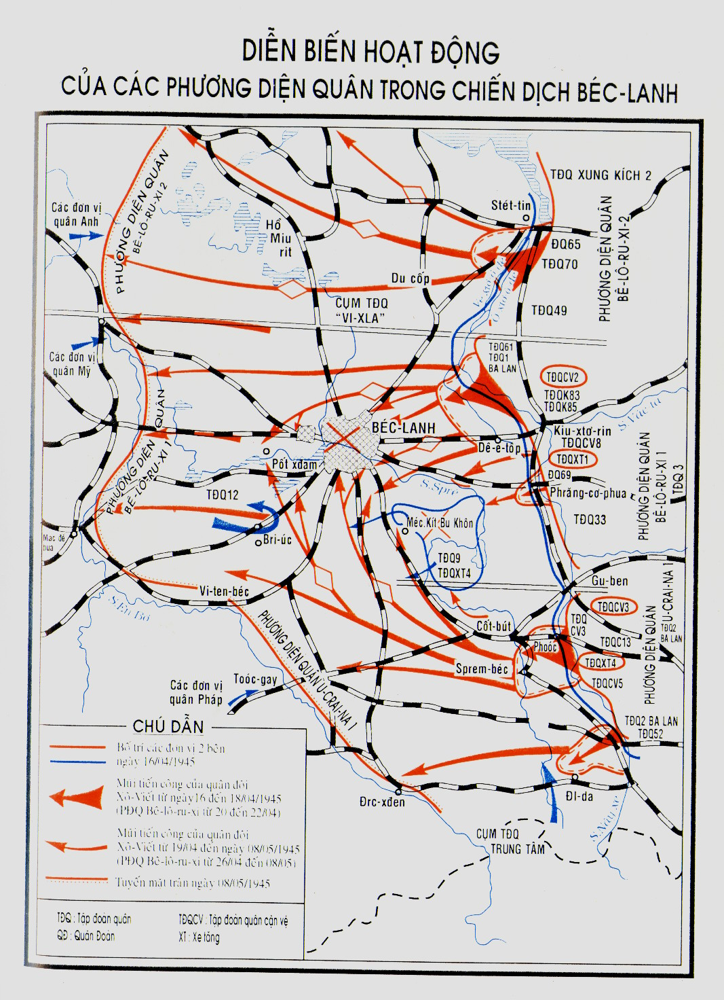

LÀ chiến dịch kết thúc Thế chiến thứ hai ở châu Âu, chiến dịch Béc-lanh giữ một vị trí đặc biệt. Chiếm được Béc-lanh là giải quyết xong những vấn đề quân sự, chính trị quan trọng nhất, có ảnh hưởng rất lớn đến việc xây dựng nước Đức sau chiến tranh và vị trí chính trị của nước Đức ở châu Âu.
Lực lượng vũ trang Xô-viết chuẩn bị cho trận đánh cuối cùng với quân phát-xít đã nghiêm chỉnh theo đúng đường lối đã được thỏa thuận với các nước Đồng minh là buộc nước Đức phải đầu hàng không điều kiện cả về mặt quân sự, kinh tế lẫn chính trị. Mục tiêu chính trong giai đoạn chiến tranh này là thủ tiêu hoàn toàn chủ nghĩa phát-xít trong chế độ xã hội và nhà nước Đức, bắt bọn tội phạm quốc xã phải đền tội thích đáng nhất về những vụ giết người hàng loạt, về sự tàn phá và xúc phạm mà chúng đã gây ra đối với các dân tộc trong những nước bị chúng chiếm đóng, nhất là đối với nước chúng ta đã chịu biết bao đau khổ.
Ý đồ của chiến dịch Béc-lanh về cơ bản đã được xác định trong Đại bản doanh vào tháng 11-1944. Trong quá trình các chiến dịch Vi-xla - Ô-đe, Đông Phổ và Pô-mê-ra-ni, ý đồ đó lại được xác định rõ thêm.
Khi xây dựng kế hoạch chiến dịch Béc-lanh, có tính đến cả những hoạt động của quân đội viễn chinh các nước Đồng minh.
Cuối tháng 3, đầu tháng 4 năm 1945, quân đội viễn chinh các nước Đồng minh đã triển khai trên một chính diện rộng, tiến ra sông Ranh, và bắt đầu vượt sông để phát triển tiến công chung vào các vùng trung tâm nước Đức.
Bộ tổng chỉ huy quân Đồng minh đề ra nhiệm vụ trước mắt là tiêu diệt cụm quân địch ở Rua và chiếm lấy vùng công nghiệp đó. Kế đó, họ sẽ cho quân đội Mỹ và Anh tiến đến sông En-bơ trên hướng Béc-lanh. Cùng lúc đó, họ mở các chiến dịch của quân Mỹ và Pháp ở hướng nam nhằm đánh chiếm các vùng Stút-ga, Muy-ních và tiến vào những vùng trung tâm nước Áo và Tiệp Khắc.
Như chúng tôi đã nói, mặc dầu quyết định của hội nghị Yan-ta đã quy định vùng chiếm đóng của Quân đội Liên Xô xa mãi sang phía tây Béc-lanh và lúc này bộ đội Liên Xô đã có mặt ở sông Ô-đe và Nây-xe (cách Béc-lanh 60 - 100 km) và đã sẵn sàng mở chiến dịch Béc-lanh, nhưng người Anh vẫn tiếp tục ôm ấp mộng chiếm Béc-lanh sớm, trước khi Hồng quân tới.
Tuy giữa các giới quân sự, chính trị Mỹ và Anh chưa nhất trí với nhau về những mục tiêu chiến lược trong giai đoạn kết thúc chiến tranh, nhưng bản thân bộ tổng chỉ huy lực lượng viễn chinh các nước Đồng minh thì vẫn không từ bỏ ý định chiếm Béc-lanh nếu tình hình thuận lợi.
Vì vậy ngày 7-4-1945, khi thông báo cho Bộ tham mưu hợp nhất các nước Đồng minh về quyết định đối với các chiến dịch cuối cùng, tướng Đ. Ai-xen-hao tuyên bố:
- Sau khi chiếm được Lép-dích, nếu có khả năng tiến quân về Béc-lanh mà không bị tổn thất lớn thì tôi cũng muốn làm việc ấy- Và tiếp sau, lại nói - tôi là người đầu tiên tán thành tiến hành chiến tranh để đạt những mục tiêu chính trị, và nếu bộ tham mưu hợp nhất quyết định chiếm Béc-lanh là cần hơn các hoạt động có tính chất thuần túy quân sự tại chiến trường này, thì tôi vui lòng thay đổi các kế hoạch và suy nghĩ của mình để mở bằng được chiến dịch đó[1].
Cuối tháng 3, qua phái đoàn Mỹ, I.V. Xta-lin được Ai-xen-hao thông báo cho biết, ông ta đã có kế hoạch tiến quân tới ranh giới đã thỏa thuận trên hướng Béc-lanh. Theo thông báo đó thì các đơn vị Anh và Mỹ sẽ mở cuộc tiến công tiếp sau trên hướng đông bắc để tiến vào vùng Liu-béc và đến hướng đông nam nhằm tiêu diệt bọn địch ở phía nam nước Đức.
I.V. Xta-lin đã biết rằng, gần đây bọn Hít-le đang tích cực tìm cách ký kết những hiệp nghị riêng rẽ với các chính phủ Anh và Mỹ. Trước tình thế tuyệt vọng của quân đội Đức, rất có thể là bọn Hít-le sẽ không chống cự ở phía tây và sẽ mở đường cho quân đội Mỹ - Anh vào Béc-lanh, không để Béc-lanh rơi vào tay Hồng quân.
Diễn biến cuộc tiến công của các đơn vị Mỹ - Anh trên vùng sông Ranh ra sao?
Đúng là ở đây bọn Hít-le để lại một lực lượng bảo vệ rất yếu. Trước đây sau khi rút qua sông Ranh, quân Đức có thể tổ chức chống cự quyết liệt được. Song, chúng đã không làm như vậy. Trước hết là vì những lực lượng chủ yếu của chúng đã sang phía đông để chống lại bộ đội Liên Xô. Ngay trong lúc cụm quân của chúng ở hạt Rua lâm vào tình thế hiểm nghèo, bộ chỉ huy Đức vẫn rút quân ở phía tây về tăng cường cho mặt trận phía đông chống lại bộ đội Liên Xô.
Lúc đầu khi quân Mỹ - Anh mở chiến cục, bọn Đức ở mặt trận phía tây có 60 sư đoàn đã kiệt sức, hiệu lực chiến đấu của chúng chỉ ngang với 26 sư đoàn đủ biên chế. Quân Đồng minh có ở đây 80 sư đoàn biên chế trang bị đầy đủ, trong đó có 23 sư đoàn xe tăng. Quân Đồng minh lại chiếm ưu thế đặc biệt trên không. Những đòn tập kích bằng máy bay của quân Đồng minh thực tế có thể chế áp hoàn toàn mọi sự chống cự trên mặt đất cũng như trên không ở bất cứ vùng nào.
Vì vậy quân Mỹ - Anh vượt qua sông Ranh trong những điều kiện dễ dàng và họ chiếm được sông Ranh thật ra không gặp sức kháng cự nào của quân Đức.
Không đợi phải tiêu diệt xong cụm quân Đức đóng ở Rua, bộ tổng chỉ huy quân Đồng minh đã vội vã tung những lực lượng chủ yếu của họ về hướng Béc-lanh, nhằm tiến ra sông En-bơ.
Sau chiến tranh, qua nhiều lần nói chuyện với các tướng Mỹ và Anh như Ai-xen-hao, Mông-gô-mê-ri, Đờ-lát Đờ Tát-xi-nhi, Clây, Rô-béc-sơn, Smít và nhiều tướng lĩnh khác, chúng tôi được biết rõ thêm là, mãi đến khi pháo binh, súng cối, máy bay quân ta oanh tạc mãnh liệt, và cuộc tiến công hiệp đồng nhịp nhàng giữa xe tăng và bộ binh Liên Xô tại Ô-đe và Nây-xe đã làm rung chuyển đến tận gốc hệ thống phòng ngự quân Đức thì quân đội những nước Đồng minh mới dứt khoát chịu từ bỏ ý định đánh chiếm Béc-lanh.
Khi ở Đại bản doanh nhận được thông báo của tướng Ai-xen-hao quyết định mở hai đòn đột kích - về phía đông bắc và phía nam nước Đức - và quân đội Mỹ sẽ dừng lại ở ranh giới đã thỏa thuận trên hướng Béc-lanh, thì I.V. Xta-lin đã coi Ai-xen-hao như là người trung thành với lời hứa nhận trách nhiệm của mình. Ý kiến ấy tỏ ra là hơi vội.
Ngày 29-3 theo lệnh của Đại bản doanh, tôi lại về Mát-xcơ-va, mang theo kế hoạch chiến dịch Béc-lanh của Phương diện quân Bê-lô-ru-xi 1. Kế hoạch ấy do bộ tham mưu và bộ tư lệnh phương diện quân nghiên cứu trong suốt tháng 3, mọi vấn đề có tính chất nguyên tắc đều thống nhất về cơ bản với Bộ Tổng tham mưu và Đại bản doanh. Vì vậy chúng tôi có thể đệ trình một kế hoạch chi tiết lên Tổng tư lệnh tối cao thông qua.
Khuya hôm đó, I.V. Xta-lin gọi tôi đến phòng làm việc trong điện Crem-lanh. Có một mình I.V. Xta-lin trong phòng. Hội nghị với các ủy viên Hội đồng quốc phòng vừa kết thúc.
Cũng như mỗi lần, đồng chí lặng lẽ chìa tay ra, tựa như vẫn đang tiếp tục câu chuyện mới bị ngắt quãng và nói:
- Mặt trận của Đức ở phía tây dứt khoát bị tan vỡ, và có lẽ bọn Hít-le không muốn áp dụng những biện pháp nhằm chặn cuộc tiến quân của quân đội Đồng minh lại. Trong khi đó chúng lại tăng cường lực lượng trên tất cả những hướng quan trọng nhất chống lại chúng ta. Đồng chí nhìn xem tấm bản đồ tình hình gần đây nhất của quân đội Đức.
Mặc cho tẩu thuốc cháy, Tổng tư lệnh tối cao nói tiếp:
- Tôi cho rằng, chiến đấu sẽ gay go, ác liệt...
Xong, đồng chí hỏi, tôi đánh giá quân địch trên hướng Béc-lanh như thế nào.
Tôi rút tấm bản đồ trinh sát của phương diện quân đặt lên trước mặt Tổng tư lệnh tối cao. Người chăm chú xem toàn bộ sự bố trí chiến dịch, chiến lược của địch trên hướng chiến lược Béc-lanh.
Theo tài liệu của chúng tôi, bọn Đức có ở đây 4 tập đoàn quân gồm trên 90 sư đoàn, trong đó có 14 sư đoàn xe tăng và mô-tô hóa, 37 trung đoàn độc lập và 98 tiểu đoàn độc lập.
Sau này mới phát hiện rõ là ở hướng Béc-lanh chúng có hơn 1 triệu người, 10.000 đại bác và súng cối, 1.500 xe tăng và pháo tiến công, 3.300 máy bay chiến đấu, và ở ngay trong thành phố Béc-lanh chúng đã lập được một đội quân phòng vệ 20 vạn người.
- Bao giờ bộ đội ta có thể bắt đầu tiến công? - I.V. Xta-lin hỏi.
Tôi báo cáo:
- Phương diện quân Bê-lô-ru-xi 1 không quá 2 tuần lễ nữa có thể bắt đầu tiến công. Phương diện quân U-crai-na 1 chắc là vào dịp đó cũng đã chuẩn bị xong. Phương diện quân Bê-lô-ru-xi 2, theo tất cả những tin tức nhận được, còn mắc tiêu diệt nốt quân địch trong vùng Đan-xích và Gơ-đư-nha đến tận giữa tháng 4, và sẽ không thể bắt đầu tiến công cùng một lúc từ Ô-đe với Phương diện quân Bê-lô-ru-xi 1 và U-crai-na 1.
- Thôi, đành phải mở chiến dịch mà không chờ Rô-cô-xốp-xki, - I.V. Xta-lin nói. - Nếu Rô-cô-xốp-xki có chậm vài ngày cũng không đáng ngại.
Sau đó, I.V. Xta-lin đến bàn làm việc, lật mấy trang giấy ra, lấy một bức thư:
- Đây đồng chí đọc xem.
Thư do một người hảo tâm nước ngoài gửi tới. Trong thư cho biết về những cuộc đàm phán ở hậu trường giữa bọn mật vụ Đức với đại diện chính thức các nước Đồng minh. Bọn Đức đề nghị các nước Đồng minh chấm dứt chiến tranh với chúng, nếu họ đồng ý ký hòa ước riêng rẽ.
Trong thư còn nói, hình như các nước Đồng minh khước từ âm mưu của bọn Đức. Nhưng tuy vậy vẫn chưa loại trừ khả năng bọn Hít-le sẽ mở cửa cho quân Đồng minh vào Béc-lanh.
- Thế nào, đồng chí có ý kiến gì về vấn đề đó? - I.V. Xta-lin hỏi. Rồi không đợi trả lời, đồng chí nhận xét ngay - tôi nghĩ rằng Ru-dơ-ven sẽ không phá hiệp ước Yan-ta, nhưng còn Sớc-sin, thì hắn ta có thể làm tất.
I.V. Xta-lin lại đến cạnh bàn làm việc, cầm máy nói, gọi A.I. An-tô-nốp tới làm việc ngay. 15 phút sau, A.I. An-tô-nốp đã có mặt ở căn phòng Tổng tư lệnh tối cao.
- Công việc ở chỗ Rô-cô-xốp-xki ra sao?
A.I. An-tô-nốp báo cáo tình hình và diễn biến chiến đấu ở vùng Đan-xích và Gơ-đư-nha, sau đó Tổng tư lệnh tối cao hỏi về tình hình của Va-xi-lép-xki ở vùng Cních-xbéc.
A-lếch-xây I-nô-ken-ti-ê-vích báo cáo tình hình của Phương diện quân Bê-lô-ru-xi 3.
I.V. Xta-lin lặng lẽ đưa cho đồng chí đọc lá thư tôi vừa xem.
A.I. An-tô-nốp nói:
- Đây là một dẫn chứng về thói lèo lái ở hậu trường giữa các nhóm cầm quyền Hít-le và Anh.
Quay về phía A.I. An-tô-nốp, Tổng tư lệnh tối cao nói:
- Đồng chí gọi dây nói ra lệnh cho Cô-nép về Đại bản doanh ngày 1-4, đem theo kế hoạch chiến dịch của Phương diện quân U-crai-na 1, và trong hai ngày tới, đồng chí hãy làm việc với Giu-cốp.
Hôm sau, A.I. An-tô-nốp giới thiệu cho tôi dự án kế hoạch chiến lược của chiến dịch Béc-lanh, trong đó có đầy đủ kế hoạch tiến công của Phương diện quân Bê-lô-ru-xi 1. Sau khi chú ý tìm hiểu kế hoạch chiến dịch Béc-lanh do Đại bản doanh xây dựng, tôi cho rằng kế hoạch được chuẩn bị tốt, hoàn toàn đáp ứng tình huống chiến dịch, chiến lược trong thời kỳ đó.
Ngày 31-3, tư lệnh Phương diện quân U-crai-na 1, nguyên soái I.X. Cô-nép tới Bộ Tổng tham mưu. Ở đây, đồng chí bắt tay vào nghiên cứu kế hoạch chung của chiến dịch Béc-lanh và sau đó báo cáo về dự thảo kế hoạch tiến công của bộ đội Phương diện quân U-crai-na 1.
Nếu trí nhớ của tôi không thay đổi thì tất cả chúng tôi lúc đó đã đều nhất trí trong tất cả các vấn đề có tính nguyên tắc.
Ngày 1-4, ở Đại bản doanh Bộ Tổng tư lệnh tối cao, chúng tôi nghe A.I. An-tô-nốp báo cáo về kế hoạch chung của chiến dịch Béc-lanh, sau đó tôi báo cáo về kế hoạch tiến công của Phương diện quân Bê-lô-ru-xi 1 và I.X. Cô-nép-về kế hoạch tiến công của Phương diện quân U-crai-na 1.
Tổng tư lệnh tối cao không đồng ý với tuyến phân giới giữa Phương diện quân Bê-lô-ru-xi 1 và U-crai-na 1 vẽ trên bản đồ của Bộ Tổng tham mưu. Đồng chí xóa ranh giới từ Nây-xe đến Pốt-đam và kẻ đường chỉ đó đến Liu-ben (cách Béc-lanh 60 km về phía đông nam).

Ngay lúc đó đồng chí chỉ thị cho nguyên soái I.X. Cô-nép:
- Trường hợp quân địch ngoan cố chống cự ở những cửa ngõ phía đông Béc-lanh, và cuộc tiến công của Phương diện quân Bê-lô-ru-xi 1 có thể bị chững lại thì Phương diện quân U-crai-na 1 phải sẵn sàng cho các tập đoàn quân xe tăng đột kích vào phía nam Béc-lanh.
Hiện nay có những ý kiến không đúng với sự thật cho rằng, các tập đoàn quân xe tăng 3 và 4 được đưa vào đánh Béc-lanh hình như không phải do quyết định của Đại bản doanh mà là theo sáng kiến của tư lệnh Phương diện quân U-crai-na 1. Để khôi phục lại sự thật, tôi dẫn ra đây lời của nguyên soái I.X. Cô-nép nói về vấn đề đó trong hội nghị tổng kết của cán bộ cao cấp thuộc các đơn vị bộ đội ở khu giữa ngày 18-2-1946 mà mọi người còn nhớ rõ.
“Khoảng 24 giờ ngày 16-4, khi tôi báo cáo rằng cuộc tiến công phát triển có kết quả, đồng chí Xta-lin đã chỉ thị như sau:
“Chỗ đồng chí Giu-cốp đang gặp khó khăn, đồng chí cho Rư-ban-cô và Lê-liu-sen-cô quay sang Xê-len-đoóc. Đồng chí hãy nhớ những điều đã thỏa thuận với nhau ở Đại bản doanh”.
Trận tiến công Béc-lanh được quyết định mở màn vào ngày 16-4, không đợi sự phối hợp hành động của Phương diện quân Bê-lô-ru-xi 2. Theo những tính toán đã được xác định, Phương diện quân Bê-lô-ru-xi 2 không thể bắt đầu tiến công từ sông Ô-đe trước ngày 20-4.
Tối ngày 1-4, lúc tôi có mặt ở Đại bản doanh, Tổng tư lệnh tối cao ký mệnh lệnh cho Phương diện quân Bê-lô-ru-xi 1 chuẩn bị và tiến hành chiến dịch đánh chiếm Béc-lanh, và chỉ thị trong vòng từ 12 đến 15 ngày phải tiến tới sông En-bơ.
Mũi đột kích chủ yếu được quyết định tổ chức từ bàn đạp Kiu-xtơ-rin bằng lực lượng của 4 tập đoàn quân bộ đội hợp thành và 2 tập đoàn quân xe tăng. Dự kiến, sau khi đột phá phòng ngự địch, sẽ đưa các tập đoàn quân xe tăng vào đánh vu hồi phía bắc và đông bắc Béc-lanh. Thê đội 2 của phương diện quân (tập đoàn quân 3 của thượng tướng A.V. Goóc-ba-tốp) cũng được ấn định sẽ bước vào chiến đấu trên hướng chủ yếu.
Vì có sự thay đổi tuyến phân giới và có chỉ thị cho phương diện quân phải sẵn sàng cho 2 tập đoàn quân xe tăng từ phía nam quay sang đánh vào Béc-lanh, nên bản dự thảo mệnh lệnh cho Phương diện quân U-crai-na 1 được Tổng tư lệnh tối cao ký chậm một ngày, sau khi sửa chữa những điểm cần thiết.
Mệnh lệnh cho Phương diện quân U-crai-na 1 như sau:
- Tiêu diệt tập đoàn địch đóng trong vùng Cốt-bút và phía nam Bée-lanh;
- Cô lập những lực lượng chủ yếu của cụm tập đoàn quân “Trung tâm” với cụm địch ở Béc-lanh, nhân đó sẽ bảo đảm mặt phía nam cho mũi đột kích của Phương diện quân Bê-lô-ru-xi 1;
- Trong vòng không quá 10 đến 12 ngày, phải tiến ra tuyến Bê-ê-lít - Vi-ten-béc và xa nữa, theo sông En-bơ đến Đrét-xden;
- Mũi đột kích chủ yếu của phương diện quân đánh vào hướng Spren-béc;
- Sau khi đột phá, đưa tập đoàn quân xe tăng 3 và 4 tiến vào hướng đột kích chủ yếu.
Do chỗ phương diện quân Bê-lô-ru-xi 2 vẫn còn chiến đấu kịch liệt chống quân Đức trong các vùng đông nam Đan-xích và bắc Gơ-dư-nha, Đại bản doanh bộ Tổng tư lệnh tối cao đã hạ quyết tâm bắt đầu tập trung chủ lực của phương diện quân đó tới Ô-đe để thay phiên cho các đơn vị của Phương diện quân Bê-lô-ru-xi 1 ở khu vực Côn-béc - Vét chậm nhất vào ngày 15-4. K.K. Rô-cô-xốp-xki được lệnh giữ lại một phần lực lượng để thanh toán nốt quân địch trong vùng Đan-xích và Gơ-dư-nha.
Trong thời gian thảo luận kế hoạch chung những hoạt động sắp tới trên hướng Béc-lanh ở Đại bản doanh, các mục tiêu và nhiệm vụ tác chiến của Phương diện quân Bê-lô-ru-xi 2 về cơ bản đã được xác định.
Vì chiến dịch của Phương diện quân Bê-lô-ru-xi 2 bắt đầu 4 ngày sau, nên nguyên soái K.K. Rô-cô-xốp-xki không được triệu tập về Đại bản doanh để thảo luận về chiến dịch Béc-lanh.
Do đó, Phương diện quân Bê-lô-ru-xi 1 đã phải tiến công trong những ngày đầu tiên rất căng thẳng là vì sườn bên phải bị hở, không có sự hiệp đồng về chiến dịch và chiến thuật với bộ đội của Phương diện quân Bê-lô-ru-xi 2.
Chúng tôi đã nghiên cứu nghiêm chỉnh việc Phương diện quân Bê-lô-ru-xi 2 bắt buộc phải lui ngày bắt đầu tiến công lại, và cả những khó khăn mà phương diện quân đó nhất định sẽ gặp phải trong quá trình vượt sông Ô-đe ở phía hạ lưu. Ở phía ấy, sông có hai dòng - Ô-xtơ Ô-đe và Ve-xtơ Ô-đe -, rộng từ 150 đến 250 mét, sâu 10 mét. Theo chúng tôi tính toán, Phương diện quân Bê-lô-ru-xi 2 có thể vượt khá nhanh hai lòng sông đó và thiết lập được bàn đạp cần thiết, nhưng ít nhất cũng phải mất 2 - 3 ngày. Do đó, phương diện quân chỉ có thể thực sự đụng độ với quân địch ở phía bắc Béc-lanh vào khoảng 23 – 24 tháng 4, tức là vào lúc Phương diện quân Bê-lô-ru-xi 1 đánh vào Béc-lanh rồi.
Tất nhiên, tốt hơn là nên đợi 5 - 6 ngày nữa hãy bắt đầu chiến dịch Béc-lanh cùng một lúc bằng cả 3 phương diện quân, nhưng như tôi đã nói ở trên, do tình huống quân sự, chính trị hình thành lúc đó Đại bản doanh không thể lui chiến dịch chậm hơn nữa.
Từ lúc này đến ngày 16-4, thời gian chúng tôi còn rất ít, nhưng những biện pháp khẩn cấp phải tiến hành lại rất nhiều. Ví dụ: phải tổ chức lại đội hình sau khi Phương diện quân Bê-lô-ru-xi 2 đến thay phiên, đưa lượng dự trữ phương tiện vật chất rất lớn lên phía trước cho bộ đội, tiến hành công tác chuẩn bị to lớn, toàn diện về chiến dịch, chiến thuật và chuyên môn của phương diện quân cho một chiến dịch vô cùng quan trọng và khác thường như chiến dịch đánh chiếm Béc-lanh này.
Trong suốt cả cuộc chiến tranh, tôi đã có dịp tổ chức tham gia nhiều chiến dịch tiến công lớn và quan trọng, nhưng chiến dịch lịch sử đánh chiếm Béc-lanh sắp tới là một chiến dịch đặc biệt, không thể so sánh với một chiến dịch nào khác được. Bộ đội thuộc phương diện quân phải đột phá cả một vùng có nhiều tuyến phòng ngự mạnh, dày đặc, sâu thành nhiều chiến tuyến, bắt đầu ngay từ Ô-đe và cuối cùng là thành phố Béc-lanh rất kiên cố. Phải tiêu diệt trên các đường tiếp cận vào Béc-lanh bộ phận lực lượng mạnh nhất của quân đội phát-xít Đức và chiếm lấy thủ đô của nước Đức phát-xít mà quân giặc chắc chắn sẽ chiến đấu sống mái để giữ nó.
Khi suy nghĩ về chiến dịch sắp tới, tôi đã nhiều lần nhớ lại chiến dịch lịch sử vĩ đại nhất ở Mát-xcơ-va vào tháng 10 - 12 năm 1941. Thời kì ấy quân giặc đã tập trung trên các con đường vào Mát-xcơ-va những lực lượng rất lớn để tiến đánh mãnh liệt các đơn vị bộ đội Liên Xô phòng ngự. Nhiều lần, tôi đã kiểm điểm đi, lại trong trí nhớ từng giai đoạn một, phân tích những khuyết điểm của cả hai bên ta, địch. Tôi muốn nghiên cứu tỉ mỉ kinh nghiệm của trận giao chiến phức tạp đó, để vận dụng ngày càng tốt hơn nữa vào việc tiến hành chiến dịch sắp tới và cố gắng khỏi phạm sai lầm.
Chiến dịch Béc-lanh là cái mốc kết thúc con đường chiến đấu thắng lợi của các đơn vị quân đội Xô-viết anh hùng. Trước đó, họ đã vượt qua những khoảng cách hàng ngàn km bằng các trận đánh ác liệt mà trong đó, nhất là trong các trận lớn, họ đã được bồi dường thêm về kiến thức, tôi luyện thêm về tinh thần, sức lực. Cán bộ và chiến sĩ nóng lòng mong muốn nhanh chóng tiêu diệt quân địch và kết thúc chiến tranh.
Tối ngày 1-4, từ Mát-xeơ-va tôi gọi điện nói chuyện với thượng tướng M.X. Ma-li-nin, tham mưu trưởng phương diện quân. Tôi nói:
- Tất cả đã được thông qua, không có gì thay đổi đặc biệt. Chúng ta còn ít thời gian lắm. Mọi việc cứ tiến hành. Mai tôi sẽ đáp máy bay về..
Những lời dặn dò ngắn gọn đó cũng đủ để Mi-kha-in Xéc-gây-ê-vích biết, cần bắt tay vào thực hiện ngay tất cả những biện pháp theo như kế hoạch chiến dịch đã chuẩn bị.
Trong suốt cuộc chiến tranh nói chung, chúng tôi chưa lần nào có dịp đánh chiếm các thành phố lớn được củng cố vững chắc như Béc-lanh. Diện tích chung của thành phố khoảng 900 km vuông. Các công trình ngầm dưới đất rất phát triển giúp cho quân địch có khả năng cơ động rộng rãi.
Không quân trinh sát của ta đã 6 lần chụp ảnh Béc-lanh, chụp tất cả những đường tiếp cận và các dải phòng ngự.
Những tin tức, tài liệu thu được qua các bức ảnh chụp, giấy tờ bắt được và lời khai của tù binh đã giúp ta xây dựng được những sơ đồ chi tiết, các bản kế hoạch, các bản đồ để in phát cho tất cả các đơn vị và thủ trưởng cơ quan tham mưu các cấp đến tận đại đội. Bộ đội đã dựng được mô hình chính xác thành phố cùng những vùng lân cận, giúp cho việc nghiên cứu những vấn đề có liên quan đến việc tổ chức trận tổng công kích Béc-lanh và các trận đánh trong nội thành.
Từ ngày 5 đến hết ngày 7 tháng 4 các cuộc hội nghị và diễn tập chỉ huy trên bản đồ và trên mô hình Béc-lanh đã diễn ra rất tích cực với tinh thần sáng tạo. Tham gia cuộc diễn tập đó có tư lệnh, tham mưu trưởng và ủy viên hội đồng quân sự, chủ nhiệm chính trị phương diện quân, tư lệnh pháo binh các tập đoàn quân và phương diện quân, quân đoàn trưởng các quân đoàn độc lập và chủ nhiệm các binh chủng của phương diện quân. Chủ nhiệm hậu cần phương diện quân cũng tham gia để qua đấy nghiên cứu tỉ mỉ vấn đề bảo đảm vật chất cho chiến dịch. Từ ngày 8 đến 14 tháng 4 đã mở các cuộc diễn tập và tập bài đi sâu hơn trong các tập đoàn quân, quân đoàn, sư đoàn và các đơn vị thuộc tất cả các binh chủng.
Do chỗ tuyến vận tải hậu cần của phương diện quân quá dài, và đã tốn khá nhiều dự trữ vật chất vào chiến dịch Đông Pô-mê-ra-ni, nên lúc bắt đầu, chiến dịch Béc-lanh chưa lập được những dự trữ cần thiết. Cần có những nỗ lực vô cùng anh dũng của các cán bộ, nhân viên trong ngành hậu cần của phương diện quân và các tập đoàn quân. Các đồng chí ấy đã tỏ ra đủ năng lực làm tròn nhiệm vụ.
Trong khi chuẩn bị chiến dịch, tất cả chúng tôi đều suy nghĩ xem có thể làm gì được thêm để tiêu diệt và đánh quân địch đau hơn nữa. Do đó, đã nảy ra ý kiến dùng đèn chiếu đánh ban đêm.
Cú đánh của chúng tôi được quyết định thực hiện vào khoảng 2 tiếng đồng hồ trước khi trời sáng. Hơn 140 đèn chiếu phòng không có nhiệm vụ bất ngờ phát sáng, chiếu vào các trận địa quân địch và các mục tiêu tiến công.
Trong thời gian chuẩn bị chiến dịch, những người tham gia chiến dịch đã thấy rõ hiệu quả thực tế của đèn chiếu, nên tất cả đều nhất trí tán thành sử dụng.
Vấn đề sử dụng các tập đoàn quân xe tăng được đem ra thảo luận nghiêm túc trong quá trình diễn tập và thực hiện tập bài đột phá phòng ngự chiến thuật địch tại Ô-đe. Chúng tôi cân nhắc thấy, trên các điểm cao Dê-ê-lốp, phòng ngự chiến thuật của địch mạnh, nên đã quyết định chỉ sau khi chiếm được những điểm cao đó mới đưa các tập đoàn quân xe tăng vào chiến đấu.
Tất nhiên, trong kế hoạch này, chúng tôi không có dự kiến cho các tập đoàn quân xe tăng tiến sâu vào dải phòng ngự chiến dịch ngay sau khi đột phá phòng ngự chiến thuật, như đã làm trong các chiến dịch Vi-xla - Ô-đe, Đông Phổ và các chiến dịch khác trước đây. Trong những chiến dịch đó, các tập đoàn quân xe tăng đã tiến khá xa về phía trước và hành động ấy đã tạo mọi điều kiện cho các tập đoàn quân bộ đội hợp thành tiến quân nhanh chóng.
Dẫn chứng như trong chiến dịch Vi-xla - Ô-đe có lúc tập đoàn quân xe tăng đã bứt cách xa các tập đoàn quân bộ đội hợp thành đến 70 km. Nhưng ở đây, không dự kiến hành động như vậy vì khoảng cách tới Béc-lanh theo đường thẳng không quá 60 - 80 km.
Do đó đã chủ trương như sau. Nếu mũi đột kích của thê đội 1 tỏ ra không đủ sức nhanh chóng vượt qua phòng ngự chiến thuật của địch và cuộc tiến công có nguy cơ phát triển chậm, thì lúc đó sẽ đưa 2 tập đoàn quân xe tăng vào để đập tan phòng ngự địch. Như vậy sẽ tăng cường cho mũi đột kích của các tập đoàn quân bộ đội hợp thành và giúp đắc lực cho việc hoàn thành đột phá phòng ngự chiến thuật của địch trong vùng sông Ô-đe và ở những điểm cao Dê-ê-lốp.
Mệnh lệnh của Đại bản doanh đã dự định đưa cả tập đoàn quân xe tăng 1 và 2 vào chiến đấu để đột kích vào đông bắc và vu hồi vào phía bắc Béc-lanh. Tuy vậy trong khi diễn tập, tôi và các đồng chí lãnh đạo bộ tham mưu phương diện quân vẫn chưa thật tin ở thắng lợi của trận đột phá phòng ngự địch trên hướng chủ yếu của phương diện quân, đặc biệt là trong vùng các điểm cao Dê-ê-lốp rất kiên cố chỉ cách tiền duyên phòng ngự quân Đức có 12 km.
Vì đơn vị bạn ở bên phải chúng tôi là phương diện quân Bê-lô-ru-xi 2 bắt đầu tiến công chậm hơn nên mọi sự chậm trễ nào trong khi đột phá đều làm cho phương diện quân lâm vào tình huống tác chiến rất không lợi. Để bảo đảm cho phương diện quân tránh khỏi mọi bất trắc, chúng tôi hạ quyết tâm đặt vị trí xuất phát của tập đoàn quân xe tăng 1 của tướng M.E. Ca-tu-cốp sau tập đoàn quân cận vệ 8 của V.I. Chui-cốp để khi cần thiết có thể đưa ngay vào chiến đấu cùng với tập đoàn quân 8.
Là người chịu trách nhiệm về ý kiến thay đổi nhiệm vụ đã đề ra trong mệnh lệnh của Đại bản doanh, tôi có nhiệm vụ phải báo cáo vấn đề đó lên Bộ Tổng tư lệnh tối cao.
Nghe xong báo cáo của tôi I.V. Xta-lin nói:
- Đồng chí cứ làm, nếu thật cần, vì ở tại chỗ, đồng chí nhìn thấy rõ hơn.
Trong thời gian ấy bên phía địch đã xảy ra những gì?
Khi đặt kế hoạch cho cuộc chiến đấu bảo vệ Béc-lanh, bộ chỉ huy tối cao Đức coi đó là trận đấu quyết định trên mặt trận phía đông. Để cố gắng khích lệ quân đội của chúng, ngày 14-4, Hít-le ra lời kêu gọi:
“Chúng ta đã thấy trước đòn đột kích này và đã tổ chức một trận tuyến mạnh mẽ để chống lại, quân địch sẽ vấp phải một lực lượng pháo binh khổng lồ. Để bổ sung cho những thiệt hại về bộ binh, chúng ta đã có vô số những binh đoàn mới, các đơn vị hỗn hợp và đơn vị phòng vệ nhân dân, họ đang củng cố trận tuyến. Béc-lanh vẫn sẽ là của người Đức...”
Nhiệm vụ giữ những hướng chiến lược chủ yếu trên mặt trận phía đông do 3 cụm tập đoàn quân của Hít-le đảm nhiệm. Cụm tập đoàn quân “Vi-xla” phòng ngự theo dọc sông Ô-đe bảo vệ các cửa ngõ phía đông bắc và bắc Béc-lanh. Cụm tập đoàn quân “Trung tâm” hoạt động ở phía nam, phòng ngự miền Xắc-xô-nia và những đường tiếp cận từ đông bắc tới các vùng công nghiệp của Tiệp Khắc. Cụm tập đoàn quân “Nam” bảo đảm nước Áo và các đường tiếp cận phía đông nam vào Tiệp Khắc. Chính cụm tập đoàn quân “Vi-xla” ngay từ đầu đã chuẩn bị tổ chức phản kích vào bộ đội của Phương diện quân Bê-lô-ru-xi 1. Song, sau khi bị đánh tan và bị mất căn cứ bàn đạp Pô-mê-ra-ni, các đơn vị còn lại của chúng đã rút lui về phía bên kia sông Ô-đe, và bắt tay vào tăng cường chuẩn bị phòng ngự trên hướng Béc-lanh. Bộ chỉ huy Đức vội vã thành lập những đơn vị, binh đoàn mới, phần lớn là bọn SS để tăng cường cho cụm tập đoàn quân “Vi-xla”. Ví như chỉ lấy riêng một trại huấn luyện ở vùng Đê-bê-rít-xơ, trong một thời gian ngắn, chúng đã thành lập được 3 sư đoàn bổ sung cho cụm tập đoàn quân đó.
Ngay từ đầu, việc phòng ngự trên những đường tiếp cận trực tiếp vào Béc-lanh được giao cho Him-le phụ trách và mọi cương vị lãnh đạo ở đây đều giao cho bọn tướng SS. Hành động như vậy, bộ chỉ huy Hít-le muốn nêu bật tính chất đặc biệt quan trọng của nhiệm vụ. Trong tháng 3 và 4 năm 1945, 9 sư đoàn được điều động từ những hướng khác về hướng Béc-lanh.
Nguyên tham mưu trưởng tác chiến trong tổng hành dinh bộ chỉ huy tối cao Đức, thượng tướng I-ốt khai trong lời cung của hắn như sau:
“Để bảo đảm quân số bổ sung cần thiết cho các đơn vị ở mặt trận phía đông lúc quân Nga bắt đầu cuộc tiến công kiên quyết nói trên, chúng tôi buộc phải giải thể toàn bộ tập đoàn quân dự bị, tức là tất cả các đơn vị bộ binh, xe tăng, pháo binh và những đơn vị binh chủng dự trữ, các trường quân sự, trường học để lấy người bổ sung cho quân đội”[2].
Bộ chỉ huy Đức vạch ra một kế hoạch chi tiết phòng thủ hướng Béc-lanh. Bọn chúng hy vọng vào kết quả trận đánh phòng ngự trên sông Ô-đe, chiến trường có tính chất chiến lược ở phía trước Béc-lanh. Với mục đích ấy, chúng đã thực hiện như sau:
Tập đoàn quân 9 của tướng Bu-xe làm nhiệm vụ bảo vệ thành phố được tăng cường thêm người và kỹ thuật. Phía sau tập đoàn quân, thành lập ra những sư đoàn và lữ đoàn mới. Các binh đoàn ở tuyến 1 được bổ sung, kiện toàn số người gần dủ theo biên chế.
Chúng đặc biệt chú ý tập trung và sử dụng xe tăng và pháo tiến công trong phòng ngự.
Từ Ô-đe đến Béc-lanh địch xây dựng một hệ thống công trình phòng ngự dày đặc, thành nhiều tuyến liên tục, mỗi tuyến có đến vài ba dãy chiến hào. Dải phòng ngự chủ yếu có tới 5 tuyến chiến hào liên tục. Địch còn sứ dụng những tuyến chướng ngại thiên nhiên như: hồ, sông, kênh rào, khe rãnh. Tất cả những vùng dân cư đều được tổ chức thành khu phòng ngự vòng tròn.
Vùng đông bắc Béc-lanh thành lập tập đoàn quân “ Stây-ne”, phòng thủ Béc-lanh. Thành phố chia ra làm 8 khu phòng ngự vòng tròn. Thêm nữa, còn một đặc khu thứ 9 là đặc khu trung tâm Béc-lanh. Ở đây có những tòa nhà của chính phủ, văn phòng đế quốc[3], sở Giét-ta-pô, nhà quốc hội.
Tại những ngả đường ven thành phố đã xây dựng 3 tuyến phòng ngự: vành đai ngăn chặn vùng ngoài, vành đai phòng thủ vùng ven và vành đai phòng thủ nội thành, xây đắp những vật chướng ngại kiên cố, chướng ngại chống tăng, ụ đống, các công trình bằng bê-tông. Cửa sổ nhà ở được củng cố, biến thành những lỗ châu mai.
Chúng thành lập ra bộ tham mưu phòng thủ Béc-lanh, báo trước cho nhân dân biết cần phải chuẩn bị chiến đấu quyết liệt trên các đường phố, trong từng căn nhà, và chiến đấu sẽ diễn ra trên mặt đất và cả những công trình ngầm dưới đất. Nhân dân được giới thiệu biết sử dụng đường xe điện ngầm, hệ thống cống rãnh ngầm, những phương tiện thông tin để tổ chức chiến đấu. Bộ tham mưu phòng thủ Béc-lanh ra một mệnh lệnh đặc biệt chủ trương biến những khu phố dân ở thành những pháo đài. Mỗi một đường phố, một quãng đường, một ngôi nhà, một kênh đào, một cầu cống đều là một yếu tố hợp thành trong công cuộc phòng thủ chung cho thành phố. Hai trăm tiểu đoàn phòng vệ nhân dân được tổ chức và huấn luyện đặc biệt để tiến hành chiến đấu trong các phố xá.
Tất cả những lực lượng pháo cao xạ được dùng vào việc tăng cường cho pháo binh phòng ngự trên những ngả đường tiến vào Béc-lanh và ngay trong thành phố. Hơn 600 khẩu pháo cao xạ cỡ trung bình và lớn được sử dụng làm pháo chống tăng, chống bộ binh. Ngoài ra, còn sử dụng cả những xe tăng đang sửa chữa nhưng pháo trên đó còn dùng được để làm thành những hỏa điểm. Những xe tăng ấy được đặt sâu dưới đất ở những ngã tư đường phố, gần những cầu xe lửa. Những đội xung kích chống tăng được thành lập, người lấy trong số đoàn viên đoàn thanh niên phát-xít “Hít-le”. Bọn chúng được trang bị những quả đạn chống tăng.
Hơn 40 vạn người được huy động vào làm các công việc phòng thủ Béc-lanh. Trong thành phố tập trung những đơn vị cảnh sát và SS tinh nhuệ. Nhiều trung đoàn SS có những tiểu đoàn độc lập bố trí trong những vùng sát Béc-lanh được điều động về để phòng thủ đặc khu ở Béc-lanh. Môn-ke, đội trưởng đội bảo vệ Hít-le, chỉ huy những đơn vị SS đó.
Bộ chỉ huy phát-xít cho rằng, chúng sẽ bắt buộc chúng ta phải tiến từng bước một, tuyến này đến tuyến khác, kéo dài trận chiến đấu tới mức làm bộ đội ta bị mệt mỏi, hao hụt và bắt chúng ta phải dừng lại ở những cửa ngõ sát Béc-lanh. Âm mưu của chúng là sẽ chống cự lại bộ đội ta, giống như bộ đội ta đã quật lại chúng tại những cửa ngõ Mát-xcơ-va năm xưa. Song, mọi tính toán của chúng đều bị phá sản thảm hại.
Những việc làm trước khi mở chiến dịch Béc-lanh đã phát triển đến nỗi khó lòng mà che giấu, không cho địch biết ý định của chúng ta. Đối với bất kỳ ai, dù không phải là người chuyên nghiên cứu về quân sự, cũng nhìn thấy rõ sông Ô-đe là cái chìa khóa mở cửa vào. Béc-lanh, và sau khi vượt được sông Ô-đe, nhất định sẽ nhanh chóng mở ngay cuộc tiến công vào Béc-lanh. Bọn Đức đang chờ đợi điều đó. Tướng I-ốt có khai sau này trong buổi lấy cung:
“Bộ Tổng tham mưu Đức hiểu rằng, chiến dịch lịch sử đánh chiếm Béc-lanh sẽ được quyết định tại sông Ô-đe, vì vậy đã điều bộ phận chủ yếu của tập đoàn quân 9 phòng thủ Béc-lanh ra tiền duyên. Còn các lực lượng dự bị mới thành lập thì được tập trung ở phía bắc Béc-lanh để về sau này mưu toan tổ chức phản kích vào sườn các đơn vị của nguyên soái Giu-cốp.
Trong khi chuẩn bị cuộc tiến công này, chúng tôi có ý thức đầy đủ rằng bọn Đức đã sẵn sàng đối phó với cuộc tiến công của ta vào Béc-lanh. Vì vậy bộ tư lệnh phương diện quân đã nghĩ đến mọi chi tiết để làm sao giành được yếu tố bất ngờ cao nhất cho cuộc đột kích đối với quân địch.
Chúng tôi quyết định sử dụng một số lượng lớn máy bay, xe tăng, pháo binh và dự trữ vật chất để giáng vào đầu bọn địch phòng ngự một đòn thật nặng, thật đau, làm cho cho chúng bị rung chuyển đến tận gốc. Nhưng phải làm sao bí mật tập trung được trong một thời hạn ngắn toàn bộ số lớn khí tài và phương tiện đó tại các địa bàn hoạt động. Muốn thế phải làm rất nhiều việc.
Nhiều đoàn xe hỏa chở các đơn vị pháo binh, súng cối, xe tăng phải chạy ngang đất nước Ba Lan. Trông bề ngoài thì đó chỉ là những đoàn xe chở hàng dân dụng vì trên các toa đĩa người ta thấy chất đầy củi gỗ và bao bì hạt giống. Nhưng khi tàu đến ga để bốc dỡ thì ngụy trang được dọn sạch, xe tăng, đại bác, xe kéo từ những toa lần lượt được đưa xuống và chỉ trong chốc lát được cất giấu vào công sự ngay. Những đoàn tàu hết hàng lại quay trở lại phía đông, và những đoàn tàu mới, chở khí tài kỹ thuật lại nối tiếp nhau vào ga. Một số lượng lớn đại bác hạng nặng, súng cối và xe kéo pháo được bổ sung cho phương diện quân theo kiểu cách như thế.
Ngày 29-3, khi những trận đánh cuối cùng ở Pô-mê-ra-ni chấm dứt thì pháo và xe tăng được ngụy trang nghiêm ngặt đã được chuyển xong về phía nam. Bộ đội đã đóng kín các rừng lớn và nhỏ trên bờ phía đông sông Ô-đe. Trên hướng Béc-lanh đã tập trung 22.000 khẩu pháo và súng cối các cỡ. Chúng tôi đã thiết bị trận địa bắn cho từng khẩu pháo, đào hầm trú ẩn cho các khẩu đội và hố để chứa đạn.
Ban ngày tại căn cứ bàn đạp thường là vắng ngắt, nhưng đêm đến linh hoạt hẳn lên. Hàng nghìn người dùng cuốc, xẻng, xà-beng lặng lẽ đào đất. Việc làm trở nên nặng nhọc hơn, vì sắp đến vụ băng tan mùa xuân, đường sá đã bắt đầu lầy lội. Hơn 1,8 triệu mét khối đất đã được đào trong những đêm ấy. Nhưng sáng ra, các công việc khổng lồ đó không để lại một dấu vết gì vì tất cả đã được ngụy trang rất cẩn thận.
Đêm đêm, những đoàn lớn xe tăng, pháo, xe vận tải chở đạn dược, nhiên liệu và lương thực rầm rập kéo đến bằng nhiều đường và cả ở những chỗ không có đường. Riêng về đạn cho pháo, lúc bắt đầu chiến dịch đòi hỏi phải tập trung 7.147.000 viên. Muốn bảo đảm cho bộ đội ta tiến công có kết quả, không được để xảy ra một sự gián đoạn nào trong khâu cung cấp. Tính chất của chiến dịch đòi hỏi phải vận chuyển không ngừng đạn dược từ các kho của phương diện quân thẳng đến các đơn vị, không qua những khâu trung gian như kho của tập đoàn quân và sư đoàn.
Nền đường sắt ở đây được cải tạo để phù hợp với nền đường sắt Nga và đạn dược có thể chở đến tận gần sông Ô-đe. Muốn hình dung cho rõ quy mô tất cả những cuộc chuyên chở ấy, chỉ cần nói là, nếu như các đoàn tàu chở hàng cho chiến dịch được xếp nối đuôi nhau thì nó sẽ dài tới 1.200 km.
Chúng tôi hoàn toàn tin tưởng rằng, bộ đội sẽ không bị thiếu thốn đạn dược, nhiên liệu và lương thực. Mà thật đúng như vậy, khâu cung cấp được tổ chức đến mức là khi chúng tôi bắt đầu tiến công vào ngay thành phố Béc-lanh thì đạn dược vẫn có đầy đủ số lượng như khi chúng tôi bắt đầu từ sông Ô-đe tiến ra. Trong thời gian tiến công từ Ô-đe đến Béc-lanh, cung cấp rất đều đặn.
Nói chung, công tác chuẩn bị chiến dịch Béc-lanh triển khai trên một quy mô và độ căng thẳng chưa từng thấy. Trên một khu vực bề mặt tương đối hẹp, trong một thời gian ngắn đã tập trung được 68 sư đoàn bộ binh, 3.155 xe tăng và pháo tự hành, và như tôi đã nói, chừng 22.000 nòng pháo và súng cối. Chúng tôi vững tin rằng, với những phương tiện và lực lượng như thế, bộ đội ta sẽ đánh tan địch trong một thời hạn ngắn nhất.
Toàn bộ khối lượng binh khí kỹ thuật, người và phương tiện vật chất ấy phải vượt qua sông Ô-đe. Ở đây cần làm một số lớn cầu và bến vượt, bảo đảm không riêng chỗ bộ đội qua sông, mà còn để tiếp tế lương thực sau này. Sông có đoạn rộng 380 mét. Vụ băng tan mùa xuân đã bắt đầu. Các công trình xây dựng tiến hành rất sát tuyến chiến đấu, dưới những vụ oanh tạc có hệ thống của pháo binh, súng cối và máy bay địch. Tuy nhiên, lúc các binh đoàn bắt đầu tiến ra những khu vực xuất phát thì cũng đã bắc xong 23 chiếc cầu qua sông Ô-đe và 25 bến phà. Vùng bến vượt được hỏa lực nhiều tầng của cao xạ yểm hộ, và hàng trăm máy bay tiêm kích đi tuần tiễu bảo vệ trên không.
Bắt đầu từ những ngày đầu tháng 2, địch tại Ô-đe hoạt động thường xuyên tích cực. Trong suốt tháng 3 và nửa đầu tháng 4, không một ngày nào địch ngừng cuộc chiến đấu căng thẳng hòng chiếm lại những căn cứ đầu cầu của chúng ta ở vùng Kiu-xtơ-rin. Ngoài việc dùng máy bay ném bom tập trung, chúng còn dùng cả máy bay phóng thủy lôi để phá cầu và bến phà của chúng ta, nhưng những chiếc cầu ấy vẫn tiếp tục tồn tại. cầu nào bị phá hoại được nhanh chóng khôi phục ngay. Hàng nghìn km đường dây điện thoại được chôn ngầm dưới đất và mắc trên cột sẵn sàng đưa vào hoạt động.
Tại khu vực đột kích chủ yếu của phương diện quân, mật độ pháo binh đạt tới 270 nòng pháo cỡ 76 ly trở lên trên 1 km chính diện đột phá.
Đi đôi với việc chuẩn bị về quân sự và vật chất cho chiến dịch, các Hội đồng quân sự, cơ quan chính trị, các tổ chức Đảng đã tiến hành công tác Đảng và công tác chính trị rộng khắp nhằm chuẩn bị cho chiến dịch cuối cùng ở Bée-lanh.
Trong những ngày ấy, chúng tôi đã kỷ niệm 75 năm ngày sinh của V.I. Lê-nin. Toàn bộ công tác giáo dục bộ đội đã được nâng lên nhân ngày kỷ niệm vị lãnh tụ cách mạng. Trình độ hiểu biết về Đảng của chiến sĩ và cán bộ trong những ngày lịch sử kết thúc chiến tranh đặc biệt được nâng cao. Công tác phát triển Đảng được tăng cường. Hồi giữa tháng 4, tôi có dịp tham dự một cuộc sinh hoạt Đảng của sư đoàn 416 thuộc tập đoàn quân xung kích 5. Tất cả những đồng chí phát biểu đều nói lên rằng, mỗi một đảng viên cộng sản trong chiến dịch tới, đặc biệt là khi công phá Béc-lanh, ' phải lấy gương mình mà lôi cuốn các chiến sĩ ngoài đảng trên tinh thần đoàn kết giúp đỡ lẫn nhau. Không riêng những đảng viên cộng sản, mà cả những quân nhân ngoài Đảng với tinh thần hào hứng, đã hứa với Đảng, sẵn sàng nhanh chóng tiêu diệt chủ nghĩa phát-xít.
Tôi phải dành những lời tốt đẹp để nói về ủy viên Hội đồng quân sự phương diện quân, trung tướng Côn-xtan-tin Phê-đô-rô-vích Tê-lê-ghin người đã có nghị lực và tinh thần sáng tạo rất cao trong việc lãnh đạo toàn bộ công tác Đảng và công tác chính trị trong bộ đội. Thông qua cục chính trị của phương diện quân, đồng chí đã đích thân xuống nhiều đơn vị và phân đội, kêu gọi các chiến sĩ và cán bộ chỉ huy tiến lên vì Tổ quốc lập công.
Đồng chí đã tiến hành công tác giải thích rộng khắp về thái độ trung thực đối với người dân thường nước Đức, những người đã bị bọn Hít-le lừa bịp và hiện nay đang chịu đựng mọi tai ách nặng nề của chiến tranh. Tôi phải nói rằng nhờ có những chỉ thị kịp thời của Ban Chấp hành Trung ương Đảng chúng ta và công tác tuyên truyền giải thích sâu rộng mới tránh được những hành động đáng tiếc của các chiến sĩ, những người mà gia đình họ đã bị đau khổ nhiều vì những hành động man rợ, bạo tàn của bè lũ Hít-le.
Như tôi đã nói ở trên, việc tiêu diệt bọn địch đóng ở Béc-lanh và đánh chiếm Béc-lanh là do Phương diện quân Bê-lô-ru-xi 1 tiến hành phối hợp với một phần lực lượng của Phương diện quân U-crai-na 1.
Giữa Phương diện quân Bê-lô-ru-xi 1 và U-crai-na 1 có quy định mối quan hệ hiệp đồng chặt chẽ về chiến lược, chiến dịch và chiến thuật, do Đại bản doanh phối hợp và điều chỉnh.
Ví như, trong quá trình chiến đấu, để khép chặt vòng vây chiến dịch đối với toàn bộ quân địch đóng ở Béc-lanh, Đại bản doanh đã quy định sự hiệp đồng giữa các đơn vị cánh phải Phương diện quân Bê-lô-ru-xi 1 với tập đoàn quân xe tăng 4 của Phương diện quân U-crai-na 1 khi đơn vị này tiến đến vùng Pốt-xđam - Ra-te-nốp - Bran-đem-bua.
Khi đặt kế hoạch chiến dịch chúng tôi đã quyết định sử dụng tập đoàn quân 69 và 33 từ khu vực Phrăng-cơ-phua - Na-ô-đe (phía nam đường sắt Phrăng-cơ-phua - Béc-lanh) mở mũi tiến công thứ yếu theo hướng chung tới Bôn-xơ-đoóc để không cho tập đoàn quân 9 của địch rút về Béc-lanh sau khi Phương diện quân Bê-lô-ru-xi 1 và U-crai-na 1 đột phá phòng ngự địch tại Ô-đe và Nây-xe.
Đại bản doanh đã ra lệnh cho tư lệnh Phương diện quân U-crai-na 1 dùng một bộ phận lực lượng cánh phải của Phương diện quân đột kích từ vùng Cốt-bút đến Ben-đích - Búc-gôn nhằm cắt tập đoàn quân 9 địch ra khỏi Béc-lanh và cùng với bộ đội cánh trái Phương diện quân Bê-lô-ru-xi 1 tiêu diệt chúng.
Đòn đột kích của các tập đoàn quân 69, 33, 3 thuộc Phương diện quân Bê-lô-ru-xi 1 và đòn đột kích của tập đoàn quân cận vệ 13, một bộ phận của tập đoàn quân xe tăng cận vệ 3 và tập đoàn quân 28 thuộc phương diện quân U-crai-na 1 đã khóa đuôi toàn bộ cụm phía đông nam của tập đoàn quân 9 địch gồm 20 vạn tên, không cho chúng rút khỏi Béc-lanh và sau đó đã nhanh chóng tiêu diệt chúng.
Cần phải nhấn mạnh đến tác dụng tích cực của tập đoàn quân xe tăng cận vệ 1 thuộc phương diện quân Bê-lô-ru-xi 1 đã tiến vào phía đông nam Béc-lanh để cắt đường rút của tập đoàn quân 9 về Béc-lanh. Hành động đó làm cho trận đánh trong thành phố sau này được dễ dàng hơn.
Bây giờ tôi xin phép lần lượt nhắc đến một phần diễn biến của chiến dịch lịch sử Béc-lanh.
Hai ngày trước khi tiến công chúng tôi đã cho tiến hành trinh sát trên toàn bộ mặt trận, 32 đội trinh sát, lực lượng mỗi đội chừng một tiểu đoàn bộ binh đã chiến đấu để trinh sát trong hai ngày đêm 14 và 15 tháng 4. Qua đó, chúng ta đã xác định rõ thêm hệ thống hỏa lực phòng ngự và đội hình bố trí của quẩn địch, thấy được chỗ mạnh và chỗ yếu nhất trong dải phòng ngự của chúng.
Công tác trinh sát bằng sức mạnh ấy còn nhằm mục đích khác nữa. Chúng ta buộc quân Đức phải điều thêm lên tiền duyên nhiều sinh lực và khí tài để đến giai đoạn pháo bắn chuẩn bị ngày 16-4, ta sẽ dùng toàn bộ pháo binh của phương diện quân chế áp chúng. Trinh sát chiến đấu ngày 14 và 15 tháng 4 có kèm theo pháo bắn mạnh, có cả pháo cỡ lớn tham gia.
Quân địch đã lầm tường trận trinh sát chiến đấu đó là bước mở đầu của trận tiến công. Chỉ cần nói rằng, các đội trinh sát của ta đã đánh bật một số đơn vị quân Đức ra khỏi trận địa 1 mà chúng đang chiếm lĩnh và hầu như toàn bộ pháo binh Đức đã được sử dụng để đánh lui cuộc tiến công của các đơn vị trinh sát.
Sự việc xảy ra đúng như ta trù tính. Địch bắt đầu vội vã điều những đội dự bị của chúng lên trận địa 2. Nhưng, bộ đội ta đã ngừng tiến quân và trụ lại trên những tuyến đã chiếm. Tình hình đó làm cho bộ chỉ huy quân địch bối rối. Sau này, ta được biết là có một số tên chỉ huy Đức đã tưởng rằng như thế là cuộc tiến công của ta đã thất bại.
Trong những năm chiến tranh, địch đã quen thấy chúng ta thường cho pháo bắn chuẩn bị rồi xung phong vào buổi sáng, vì rằng bộ binh và xe tăng chỉ tiến công được ban ngày. Chúng không ngờ sẽ bị tiến công ban đêm. Chúng tôi đã quyết định lợi dụng thói quen đó của địch.
Đêm khuya, còn độ mấy tiếng đồng hồ nữa thì pháo binh và không quân ta bắt đầu bắn chuẩn bị, tôi đến đài quan sát của tướng V.I. Chui-cốp, tư lệnh tập đoàn quân cận vệ 8.
Trên đường đi tôi gặp nhiều đồng chí chỉ huy các binh đoàn bộ đội hợp thành và xe tăng, cả đồng chí tư lệnh tập đoàn quân xe tăng cận vệ 1, tướng M.E. Ca-tu-cốp và tham mưu trưởng của đồng chí, tướng M.A. Sa-lin. Tất cả các đồng chí ấy đều không ngủ và đang kiểm tra lại mọi công tác chuẩn bị sẵn sàng chiến đấu của bộ đội.
Tôi rất vui mừng thấy các tướng M.E. Ca-tu-cốp và M.A. Sa-lin đã biết nhìn xa, tính trước. Ngay từ sáng hôm trước các đồng chí đã phái tư lệnh các binh đoàn chiến đấu trong thê đội 1 của tập đoàn quân xe tăng tới các đài quan sát của quân đoàn trưởng các quân đoàn thuộc tập đoàn quân cận vệ 8 để tổ chức thật tỉ mỉ hiệp đồng tác chiến và định rõ thời cơ và động tác bước vào đột phá, và trong trường hợp cần thiết, thống nhất cả động tác trước khi vào đột phá.
Từ chỗ tư lệnh tập đoàn quân xe tăng cận vệ 1, tôi gọi điện thoại đến phòng tham mưu tập đoàn quân xe tăng cận vệ 2 của X.I. Bốc-đa-nốp. Đồng chí Bốc-đa-nốp không có mặt ở phòng tham mưu, mà đang ở chỗ tư lệnh tập đoàn quân V.I. Cu-dơ-nét-xốp. Tham mưu trưởng tập đoàn quân xe tăng cận vệ 2, tướng A.I. Rát-di-ép-xki tới máy nói. Khi tôi hỏi tư lệnh các binh đoàn chiến đấu trong các thê đội đi đầu hiện nay ở đâu, A.I. Rát-di-ép-xki nói:
- Các đồng chí ấy đang ở phía trước, trong “dinh cơ” của Va-xi-li I-va-nô-vích Cu-dơ-nét-xốp để chuẩn bị cho những hoạt động sắp tới.
Thật vô cùng sung sướng khi thấy trong chiến tranh các cán bộ chỉ huy xe tăng đã trường thành về trình độ chiến dịch - chiến thuật như thế.
Với lòng phấn chấn như vậy, tôi cùng với ủy viên Hội đồng quân sự K.Ph. Tê-lê-ghin tới đài quan sát của V.I. Chui-cốp, tư lệnh tập đoàn quân cận vệ 8. Các đồng chí ủy viên Hội đồng quân sự và tham mưu trưởng tập đoàn quân, các đồng chí tư lệnh pháo binh cùng các tướng lĩnh và sĩ quan cao cấp khác trong tập đoàn quân đều có mặt tại đây.
Lúc này là 3 giờ đêm. Ở mọi khâu đang tiến hành đợt kiểm tra cuối cùng công tác chuẩn bị mở màn tiến công. Mọi việc được tiến hành với tinh thần thiết thực, bình tĩnh, không có tự mãn và chủ quan, không đánh giá thấp kẻ địch. Ai nấy cảm thấy rằng, tập đoàn quân đang chuẩn bị cho một trận đánh ra trò với một kẻ thù mạnh, dày kinh nghiệm và ngoan cố.
Một tiếng rưỡi đồng hồ sau, chúng tôi hoàn thành toàn bộ công tác kiểm tra. Pháo bắn chuẩn bị quy định vào 5 giờ sáng. Kim đồng hồ như chưa bao giờ quay chậm đến thế. Để cho qua 15 phút còn lại, chúng tôi quyết định uống một cốc trà đặc, nóng, do một chiến sĩ gái pha cho ngay ở dưới hầm. Tôi còn nhớ không hiểu tại sao lại gọi cô ta là Mác-gô, một cái tên gọi không Nga tí nào. Chúng tôi lặng lẽ uống trà, mỗi người theo đuổi một ý nghĩ riêng.
Đúng 3 phút trước lúc pháo bắt đầu bắn chuẩn bị, tất cả chúng tôi bước ra khỏi hầm, về vị trí của mình trong đài quan sát do đồng chí chủ nhiệm bộ đội công trình tập đoàn quân đã cố gắng xây dựng cho.
Ở đây ban ngày có thể quan sát được bao quát địa hình vùng Ô-đe. Nhưng lúc này còn vướng đám sương mù buổi sớm. Tôi liếc nhìn đồng hồ: đúng 5 giờ sáng.
Ngay lúc đó hàng ngàn khẩu pháo, súng cối và pháo hỏa tiễn “Ca-chiu-sa” thần thoại của chúng ta nhả đạn làm sáng rực cả địa hình, rồi tiếp sau là tiếng súng bắn, đạn nổ, bom phá rung chuyển không gian. Động cơ máy bay ném bom gầm rít liên hồi trên trời.
Bên phía địch trong những giây phút đầu còn có vài tiếng súng máy nổ rời rạc, sau đó tất cả câm bặt. Tựa như bên địch không còn vật gì sống nữa. Sau 30 phút pháo bắn cực mạnh, địch không bắn trả lại được một phát nào. Như thế có nghĩa là chúng đã bị chế áp hoàn toàn và hệ thống phòng ngự của chúng đã bị rối loạn. Chúng tôi quyết định bắt đầu tổng công kích.
Hàng ngàn phát tín hiệu đủ các màu rạch xé bầu trời. Theo tín hiệu đó, 140 đèn chiếu đặt mỗi cái cách nhau 200 mét đồng loạt bật sáng lên. Hơn 100 tỷ nến chiếu sáng chiến trường, làm lóa mắt quân địch, làm cho những mục tiêu công kích của xe tăng và bộ đội ta hiện rõ lên trong đêm tối. Cảnh tượng ấy đã gây cho tôi một ấn tượng lớn lao, mạnh mẽ, và có lẽ, trong suốt đời mình không có một cảm giác nào bằng.
Pháo binh càng bắn mạnh thêm, bộ binh và xe tăng nhịp nhàng tiến quân hiệp đồng chặt chẽ với nhau, dưới sự yểm hộ của hai làn hỏa lực. Đến mờ sáng bộ đội ta đã vượt trận địa 1 và bắt đầu tiến công vào trận địa 2.
Quân địch ở vùng Béc-lanh có một số lượng lớn máy bay, nhưng ban đêm chúng không thể sử dụng nó có hiệu quả, còn sáng ra thì các thê đội xung kích của ta đã ở sát nách quân địch nên các phi công của chúng không dám bắn vào quân ta vì sợ nhầm vào quân chúng.
Binh lính Hít-le thực sự bị chìm ngập trong biển lửa và sắt thép dày đặc. Bức tường bụi và khói mù mịt ngút trời, thậm chí có chỗ đèn chiếu phòng không của ta không xuyên qua nổi.
Không quân của ta từng đợt, từng đợt nối tiếp nhau quần lộn trên chiến trường. Ban đêm, mấy trăm máy bay ném bom của ta oanh tạc những mục tiêu ở quá tầm bắn của pháo binh. Những máy bay ném bom khác hiệp đồng với bộ đội bắn phá lúc trời sáng và ban ngày. Trong những ngày đầu chiến dịch máy bay của ta đã xuất kích hơn 6.550 lần chiếc.
Ngày đầu, kế hoạch quy định rằng pháo binh được bắn 1,197 triệu viên, song thực tế đã bắn 1, 236 triệu, tương đương 2.450 toa đạn dược, tức là gần 98.000 tấn sắt thép đã trút lên đầu quân địch. Phòng ngự địch bị phá vỡ và chế áp sâu đến 8 km, còn những trung tâm đề kháng của chúng thì một số ở sâu 10 - 12 km cũng bị tiêu diệt và chế áp.
Tướng pháo binh Đức Vây-linh, quân đoàn trưởng quân đoàn xe tăng 56 sau này đã khai trong buổi hỏi cung tại bộ tham mưu phương diện quân về ngày hôm đó như sau:
“Ngày 16-4, ngay những giờ tiến công đầu tiên, quân Nga đã đột phá vào sườn phải quân đoàn 101 tại khu vực của sư đoàn “Béc-lanh”, tạo nên mối uy hiếp ở bên sườn trái quân đoàn xe tăng 56.
Nửa buổi hôm ấy xe tăng Nga đã đột phá vào sư đoàn bộ binh 3 thuộc biên chế của quân đoàn xe tăng SS 11, và uy hiếp đột phá vào sườn các đơn vị của sư đoàn “Mi-un-khê-béc”. Đồng thời quân Nga đã chế áp mạnh trên chính diện khu vực của quân đoàn tôi. Đêm rạng ngày 17-4, các đơn vị trong quân đoàn tôi bị thiệt hại nặng, buộc phải rút về những điểm cao phía đông Dê-ê-lốp”.
Sáng ngày 16-4, bộ đội ta tiến quân thắng lợi trên khắp các khu vực ngoài mặt trận. Song, quân địch cũng hồi tỉnh lại và bắt đầu tổ chức kháng cự; chúng cho pháo và súng cối từ phía những điểm cao Dê-ê-lốp bắn tới, và những tốp máy bay ném bom từ phía Béc-lanh xuất hiện. Bộ đội ta càng tiến quân tới gần những điểm cao Dê-ê-lốp, thì sức kháng cự của quân địch càng mạnh lên.
Địa giới thiên nhiên này gồm các điểm cao khống chế toàn vùng, lại có vách đứng. Nó là vật chướng ngại rất lợi hại về mọi mặt trên đường tiến quân tới Béc-lanh. Nó đứng sừng sững như bức tường thành chắn ngang phía trước bộ đội ta, che khuất vùng cao nguyên, nơi sẽ diễn ra trận tổng công kích vào những cửa ngõ sát nách Béc-lanh.
Chính tại đây, dưới chân các điểm cao Dê-ê-lốp, là nơi quân Đức hy vọng sẽ chặn được bộ đội ta. Chúng đã tập trung một số lượng cực lớn lực lượng và phương tiện.
Các điểm cao Dê-ê-lốp chẳng những đã hạn chế xe tăng ta hoạt động, mà còn là vật chướng ngại quan trọng cho cả pháo binh. Nó che khuất tung thâm phòng ngự địch, làm cho ta từ mặt đất không thể quan sát thấy. Pháo binh ta buộc phải khắc phục những khó khăn ấy bằng cách bắn nhiều hơn và thường phải bắn diện tích.
Đối với quân địch, việc bảo vệ tuyến vô cùng quan trọng này có cả ý nghĩa lớn về mặt tinh thần. Bởi vì đằng sau nó là Béc-lanh! Bộ máy tuyên truyền của Hít-le tìm mọi thủ đoạn đề cao ý nghĩa quyết định và tính kiên cố không thể vượt qua được của những điểm cao Dê-ê-lốp, lúc thì gọi nó là “cái khóa của Béc-lanh”, lúc thì gọi là “pháo đài bất khả xâm phạm”.
Đến 13 giờ trưa, tôi biết rõ rằng, phòng ngự quân địch ở đây về cơ bản vẫn còn nguyên vẹn, và nếu chúng tôi cứ tiến công với đội hình như hiện nay thì không thể đánh chiếm được các điểm cao Dê-ê-lốp.
Để tăng sức đột kích cho bộ đội đang tiến công, và thực sự đột phá được phòng ngự địch, sau khi hội ý với các tư lệnh tập đoàn quân, chúng tôi quyết định đưa cả hai tập đoàn quân xe tăng của tướng M.E. Ca-tu-cốp và X.I. Bốc-đa-nốp vào chiến đấu. Lúc 14 giờ 30, ở tại đài quan sát, tôi trông thấy thê đội 1 của tập đoàn quân xe tăng 1 tiến quân.
Lúc 15 giờ, tôi gọi dây nói về Đại bản doanh báo cáo: bộ đội ta đã chọc thủng trận địa phòng ngự 1 và 2 của quân địch, phương diện quân tiến sâu được 6 km, nhưng hiện đang gặp sức kháng cự quyết liệt của địch tại tuyến những điểm cao Dê-ê-lốp, mà có lẽ, phòng ngự của chúng nơi đây về cơ bản còn nguyên vẹn. Để tăng sức đột kích cho các tập đoàn quân bộ đội hợp thành, tôi đã cho cả hai tập đoàn quân xe tăng bước vào chiến đấu. Tôi dự kiến, hết ngày mai sẽ chọc thủng phòng ngự địch.
I.V. Xta-lin chú ý lắng nghe và bình tĩnh nói:
- Ở chỗ Cô-nép phòng ngự địch yếu. Đồng chí ấy đã vượt sông Nây-xe không khó nhọc lắm và đang tiến quân không vấp phải sự chống cự đặc biệt nào hết. Hãy cho máy bay ném bom chi viện cho các tập đoàn quân xe tăng đột kích. Tối nay đồng chí gọi điện thoại cho biết công việc ở đấy diễn biến ra sao.
Tối đến, tôi lại báo cáo lên Tổng tư lệnh tối cao về những khó khăn trên những đường tiếp cận đến các điểm cao Dê-ê-lốp và nói, không thể chiếm được tuyến ấy trước tối ngày mai.
Lần này I.V. Xta-lin nói với tôi không được bình tĩnh như lúc ban chiều:
- Đồng chí đã cho tập đoàn quân xe tăng 1 bước vào chiến đấu một cách vô ích trong khu vực của tập đoàn quân cận vệ 8, Đại bản doanh không yêu cầu cho nó bước vào chiến đấu ở đó. - Xong, lại nói thêm - Đồng chí có tin rằng, ngày mai sẽ chiếm được tuyến Dê-ê-lốp không?
Cố giữ bình tĩnh, tôi trả lời:
- Ngày mai, 17-4, đến cuối ngày, phòng ngự địch trên tuyến Dê-ê-lốp sẽ bị phá vỡ. Tôi cho rằng, địch tung quân của chúng ra để chống lại bộ đội ta ở đây càng nhiều bao nhiêu, thì sau này chúng ta sẽ chiếm Béc-lanh càng nhanh bấy nhiêu, vì rằng diệt địch ở ngoài bãi trống dễ dàng hơn diệt chúng trong thành phố.
I.V. Xta-lin nói:
- Chúng tôi dự định, sẽ lệnh cho Cô-nép[4] sử dụng các tập đoàn quân xe tăng của Rư-ban-cô và Lê-liu-sen-cô từ phía nam đánh vào Béc-lanh, cho Rô-cô-xốp-xki[5] đẩy nhanh tốc độ vượt sông và cũng sẽ đột kích vu hồi vào phía bắc Béc-lanh.
Tôi trả lời:
- Các tập đoàn quân xe tăng của Cô-nép hoàn toàn có khả năng nhanh chóng tiến quân, và nên đánh vào Béc-lanh, còn Rô-cô-xốp-xki sẽ không thể bắt đầu tiến công trước ngày 23-4, vì nó mất nhiều thời gian vượt sông Ô-đe.
- Tạm biệt - I.V. Xta-lin nói rất gọn thay cho câu trả lời, và đặt ống nói xuống.
Cách một ngày sau, 18-4, Đại bản doanh ra lệnh thay đổi nhiệm vụ của Phương diện quân U-crai-na 1 và Bê-lô-ru-xi 2 như sau: I.X. Cô-nép sử dụng tập đoàn quân xe tăng cận vệ 3 tiến công băng qua Xô-xen, từ phía nam đánh vào Béc-lanh, và cho tập đoàn quân xe tăng cận vệ 4 tiến vào khu vực Pốt-xđam, còn K.K. Rô-cô-xốp-xki phải nhanh chóng vượt sông Ô-đe và dùng một bộ phận lực lượng tiến công vu hồi vào phía bắc Béc-lanh.
Từ sáng sớm ngày 17-4, trên tất cả các khu vực chiến đấu của phương diện quân dã nổ ra những trận đánh quyết liệt, địch chống cự lại một cách tuyệt vọng. Tuy vậy, buổi chiều, khi các tập đoàn quân xe tăng của ta bước vào chiến đấu và hiệp đồng với các tập đoàn quân bộ đội hợp thành đã đột phá phòng ngự địch tại nhiều đoạn trên các điểm cao Dê-ê-lốp, thì bọn địch đã không chịu nổi đòn đánh của chúng ta và đến tối chúng bắt đầu rút lui. Sáng ngày 18-4, chúng ta đã chiếm được các điểm cao Dê-ê-lốp.
Sau khi phá vỡ tuyến phòng ngự Dê-ê-lốp, chúng tôi đã có thể đưa tất cả các binh đoàn xe tăng vào chiến đấu trên một chính diện rộng.
Tuy vậy, ngày 18-4, địch vẫn cố gắng ngăn chặn cuộc tiến công của bộ đội ta, chúng tung tất cả những đội dự bị có trong tay ra, thậm chí lấy cả những đơn vị đang phòng thủ Béc-lanh. Mãi đến ngày 19-4, bị thiệt hại nặng, không chịu nổi sức ép mạnh của các tập đoàn quân xe tăng và bộ đội hợp thành của ta, quân Đức mới chịu rút lui về vành đai phòng thủ ở ngoại vi Béc-lanh.
Mấy ngày sau, M.X. Ma-li-nin báo cáo với tôi là đã nhận được chỉ thị của Đại bản doanh hủy bỏ mệnh lệnh đã gửi cho K.K. Rô-cô-xốp-xki trước đây về việc giao cho Phương diện quân Bê-lô-ru-xi 2 nhiệm vụ đánh vu hồi vào phía bắc Béc-lanh. Rõ ràng là, bộ đội Phương diện quân Bê-lô-ru-xi 2 vừa phải qua con sông Ô-đe có nhiều trắc trở vừa phải chiến đấu với quân địch phòng ngự ở đó nên không thể tiến đánh Béc-lanh trước ngày 23-4 được.
Thực tế diễn biến các sự kiện chứng minh rằng, Phương diện quân Bê-lô-ru-xi 2 không có lực lượng lớn để tiến công trước ngày 24-4, mà vào thời gian đó chiến sự đã diễn ra trong các đường phố Béc-lanh rồi, và các đơn vị bên sườn phải của Phương diện quân Bê-lô-ru-xi 1 thì đã đánh vu hồi vào phía bắc và tây bắc Béc-lanh.
Ngay trong khi đang diễn ra các trận đánh ngày 16 và 17 tháng 4, và cả về sau này tôi đã nhiều lần phân tích đi lại vấn đề bố trí đội hình chiến dịch của phương diện quân để tìm xem trong khi hạ quyết tâm, chúng tôi có phạm những sai lầm làm cho chiến dịch bị gián đoạn hay không.
Sai lầm thì không có. Nhưng phải thừa nhận chúng tôi đã có thiếu sót là để giai đoạn đột phá khu phòng ngự chiến thuật của địch kéo dài mất 1 - 2 ngày.
Trong lúc chuẩn bị chiến dịch, có chừng mực nào chúng tôi chưa đánh giá hết những đặc điểm phức tạp của địa hình ở vùng các điểm cao Dê-ê-lốp là nơi địch có điều kiện tổ chức khu phòng ngự rất khó vượt qua. Nằm cách tuyến xuất phát của ta 10 - 12 km, được núp sâu dưới đất, lại ở bên sườn phía sau các điểm cao, địch có thể bảo toàn được lực lượng và khí tài kỹ thuật khỏi sự oanh tạc của pháo binh và máy bay ta. Thật vậy, chúng tôi rất có ít thời gian chuẩn bị cho chiến dịch Béc-lanh, nhưng không phải vì thế mà có thể bào chữa cho sai sót của mình.
Giải quyết chưa tốt các vấn đề nói ở trên, trước hết là thiếu sót của tôi.
Tôi nghĩ rằng, nếu không công khai, thì trong ý nghĩ, các tư lệnh tập đoàn quân có liên quan đều nhận thấy trách nhiệm của mình về những thiếu sót ở khâu tập đoàn quân trong việc chuẩn bị đánh chiếm các điểm cao Dê-ê-lốp. Khi đặt kế hoạch tấn công, có lẽ pháo binh phải dự kiến được những khó khăn trong việc tiêu diệt trận địa phòng ngự địch ở vùng này.
Ngày nay, sau một thời gian khá lâu, suy nghĩ về kế hoạch chiến dịch Béc-lanh, tôi đi đến kết luận rằng, việc tiêu diệt bọn địch đóng ở Béc-lanh, và cả việc đánh chiếm Béc-lanh có thể thực hiện khác hơn đôi chút.
Không phải bàn cãi gì nữa, bây giờ đây, khi tất cả đều rõ như ban ngày, thì nghĩ ra một kế hoạch chiến lược dễ hơn hồi đó là lúc thực tế phải giải quyết một phương trình có chứa rất nhiều ẩn số.
Nhưng dầu sao tôi cũng muốn trình bày những ý kiến của mình về vấn đề này.
Việc đánh chiếm Béc-lanh nhất thiết nên giao ngay cho hai phương diện quân: Phương diện quân Bê-lô-ru-xi 1 và U-crai-na 1, với tuyến phân giới là: Phrăng-cơ-phua trên sông Ô-đe - Phiu-xten-van-đe - trung tâm Béc-lanh. Trong phương án này, lực lượng chủ yếu của Phương diện quân Bê-lô-ru-xi 1 có thể mở trận đột kích trên một khu vực hẹp hơn, và từ phía đông bắc, bắc và tây bắc đánh vu hồi vào Béc-lanh. Phương diện quân U-crai-na 1 sẽ sử dụng bộ phận chủ yếu của mình tiến công vào Béc-lanh theo con đường ngắn nhất, từ phía nam, tây nam và phía tây đánh quặp vào.
Tất nhiên, còn có thể còn một phương án khác nữa: giao việc đánh chiếm Béc-lanh cho một mình Phương diện quân Bê-lô-ru-xi 1, nhưng tăng cường thêm cho cánh trái của nó 2 tập đoàn quân bộ đội hợp thành và 2 tập đoàn quân xe tăng, 1 tập đoàn quân không quân và những đơn vị pháo binh, công trình cần thiết.
Trong phương án này, công tác chuẩn bị và chỉ huy chiến dịch có phần nào khó khăn hơn, nhưng việc tổ chức hiệp đồng lực lượng và phương tiện để tiêu diệt bọn địch đóng ở Béc-lanh, nhất là để đánh chiếm thành phố lại thuận lợi hơn. Những cuộc tranh cãi và tình trạng không hiểu nhau cũng sẽ ít hơn.
Cuộc tiến công của Phương diện quân Bê-lô-ru-xi 2 cũng có thể được tổ chức đơn giản hơn một chút.
Có thể chỉ cần để lại số ít lực lượng bảo vệ tại khu vực Stét-tin - Vét, còn chủ lực của phương diện quân thì tập trung ở phía nam Vét để cùng tiến công với cánh phải của Phương diện quân Bê-lô-ru-xi 1, và cũng có thể triển khai đội hình từ phía sau cánh phải Phương diện quân Bê-lô-ru-xi 1 (sau khi các đơn vị này đã vượt qua sông Ô-đe) mà đột kích vào hướng tây bắc, chia cắt cụm địch đóng ở Stét-tin - Vét.
Do nhiều nguyên nhân, nên khi Đại bản doanh nghiên cứu và phê chuẩn kế hoạch, những phương án đó không được nêu ra. Bộ Tổng tư lệnh tối cao đã cho thực hiện phương án đột kích trên một chính diện rộng.
Nhưng chúng ta hãy trở về với những ngày hôm ấy.
Trong những ngày giao chiến đầu tiên, các tập đoàn quân xe tăng của Phương diện quân Bê-lô-ru-xi 1 không sao có thể bứt lên phía trước được. Họ buộc phải chiến đấu hiệp đồng chặt chẽ với các tập đoàn quân bộ đội hợp thành. Tập đoàn quân xe tăng 2 của tướng X.I. Bốc-đa-nốp cùng với các tập đoàn quân xung kích 3 và 5 thì hoạt động tương đối có kết quả hơn. Thêm nữa là trên hướng ấy sau ngày 18-4, sức đề kháng của địch phần nào có yếu hơn.
Cuộc tiến công của Phương diện quân U-crai-na 1 (tư lệnh là nguyên soái I.X. Cô-nép, ủy viên Hội đồng quân sự là tướng K.V. Crai-niu-cốp, tham mưu trưởng là tướng I.E. Pê-tơ-rốp) ngay trong ngày đầu tiên đã phát triển với tốc độ nhanh hơn. Đúng như dự kiến, phòng ngự quân địch trên hướng đánh của phương diện quân yếu đến mức, sáng ngày 17-4, ta đã có thể tung cả hai tập đoàn quân xe tăng vào chiến đấu, tiến sâu được 20 - 25 km, vượt qua sông Sprê, và từ sáng ngày 19-4, bắt đầu tiến quân vào Xô-xen và Lu-ken-van-đê.
Song, khi bộ đội của I.X. Cô-nép tiếp cận vùng Xô-xen thì sức chống cự của quân địch tăng lên và tốc độ tiến quân của các đơn vị thuộc Phương diện quân U-crai-na 1 chậm lại. Thêm vào đấy, đặc điểm của địa hình cũng gây trở ngại cho hoạt động của tập đoàn quân xe tăng của tướng P.X. Rư-ban-cô, lúc này đội hình chiến đấu đang triển khai, Vì vậy, tư lệnh Phương diện quân I.X. Cô-nép đã gửi cho P.X. Rư-ban-cô bức điện như sau:
“Đồng chí Rư-ban-cô. Đồng chí đang tiến quân vòng vèo rồi. Một lữ đoàn đánh, còn cả tập đoàn nằm im. Tôi hạ lệnh: Phải dùng mấy đường và bằng đội hình triển khai chiến đấu băng qua đầm lầy để vượt qua tuyến Brút-lu-ken-van-đê... Chấp hành đến đâu báo cáo đến đấy.
Cô-nép.
20-4-45”.
Ngày 20-4, ngày thứ 5 của chiến dịch, pháo tầm xa của quân đoàn bộ binh 79 thuộc tập đoàn quân xung kích 3 do thượng tướng V.L. Cu-dơ-nét-xốp chỉ huy đã đánh vào Béc-lanh. Trận công phá lịch sử vào thủ đô nước Đức bắt đầu. Đồng thời, tiểu đoàn pháo binh 1 thuộc lữ đoàn pháo nòng dài cận vệ 30 của tập đoàn quân 47 do thiếu tá A.I. Diu-kin chỉ huy cũng bắn một loạt đạn vào thủ đô bọn phát-xít.
Ngày 21-4, các đơn vị thuộc các tập đoàn quân xung kích 3, xe tăng cận vệ 2, xung kích 5 và 47 đột nhập ngoại vi Béc-lanh rồi tiến vào nội thành chiến đấu. Tập đoàn quân 51, tập đoàn quân 1 Bộ đội Ba Lan và những binh đoàn khác nhanh chóng tiến tới sông En-bơ, ở đây họ sẽ gặp quân đội các nước Đồng minh.
Cơ quan chính trị các đơn vị tiến công thuộc tập đoàn quân 47 (chủ nhiệm chính trị là thiếu tướng M.Kh. Ka-la-ních), tập đoàn quân 61 (chủ nhiệm chính trị là thiếu tướng A.G. Cô-ti-cốp), tập đoàn quân xe tăng cận vệ 2 (chủ nhiệm chính trị là đại tá M.M. Lít-vi-ác) tập đoàn quân xung kích 3 (chủ nhiệm chính trị là đại tá Ph.Ya. Li-xít-xưn), tập đoàn quân xung kích 5 (chủ nhiệm chính trị là thiếu tướng E.E. Cô-sê-ép) đã tiến hành công tác Đảng, công tác chính trị sâu rộng nhằm xây dựng tinh thần tiến công cao cho các chiến sĩ.
Để nhanh chóng đập tan phòng ngự địch ngay tại Béc-lanh, chúng tôi quyết định dùng 2 tập đoàn quân xe tăng cận vệ 1 và 2 cùng với các tập đoàn quân cận vệ 8, xung kích 5, xung kích 3 và 47 vào việc đánh chiếm thành phố. Bằng một hỏa lực pháo cực mạnh như vũ bão của xe tăng, các đơn vị quân ta có nhiệm vụ phải nhanh chóng đè bẹp phòng ngự giặc ở Béc-lanh.
Ngày 23 – 24 tháng 4, bộ đội của Phương diện quân Bê-lô-ru-xi 1 đã tiêu diệt bọn lính Hít-le trên những đường tiếp cận vào trung tâm Béc-lanh. Các đơn vị thuộc tập đoàn quân xe tăng 3 của Phương diện quân U-crai-na 1 bắt đầu chiến đấu ở phía nam thành phố.
Ngày 25-4, sư đoàn bộ binh 32 thuộc tập đoàn quân 47 và lữ đoàn xe tăng 65 của tập đoàn quân xe tăng cận vệ 2 thuộc Phương diện quân Bê-lô-ru-xi 1 tiến công ở phía tây Béc-lanh đã liên lạc được với quân đoàn cơ giới cận vệ 6 thuộc tập đoàn quân xe tăng cận vệ 4 của Phương diện quân U-crai-na 1 ở vùng Két-xin.
Như vậy là, quân địch đóng ở Béc-lanh với tổng số 40 vạn tên đã bị chia cắt thành hai bộ phận cô lập với nhau: bộ phận ở Béc-lanh và bộ phận ở Phrăng-cơ-phua - Gu-ben.
Đội dự bị của phương diện quân, tập đoàn quân 3 của tướng A.V. Goóc-ba-tốp bước vào chiến đấu đã phát triển tiến công dọc theo kênh đào Ô-đe và Sprê và lợi dụng kết quả của tập đoàn quân xe tăng cận vệ 1 đã nhanh chóng tiến vào vùng Cơ-ních-xvu-xtéc-khau-đen. Từ đó, nó quay hẳn xuống phía nam và đông nam, đánh vào Tôi-pít, và ngày 25-4 đã liên lạc được với các đơn vị cánh phải của Phương diện quân U-crai-na 1 đang tiến công trên hướng tây bắc. Vòng vây bọn địch đóng ở đông nam Béc-lanh trong vùng Ven-đích - Búc-gôn đã khép chặt.
Những trận đánh trong nội thành Béc-lanh cũng phát triển có kết quả. Khi bộ đội phương diện quân đột nhập thủ đô nước Đức, thì phòng ngự trên một số khu vực ở đây đã yếu, vì rằng, bộ chỉ huy Đức đã rút một phần quân lấy trong số các đơn vị phòng thủ nội thành ra tăng cường cho quân phòng ngự tại các điểm cao Dê-ê-lốp. Quân ta nhanh chóng thâm nhập những vùng này và cơ động, đánh vu hồi vào những ổ đề kháng chủ yếu của quân địch.
Nhưng khi vào tới các khu vực ở giữa thành phố, thì sức chống cự của địch mạnh hẳn lên. Cả hai bên đều chiến đấu rất quyết liệt.
Phòng ngự quân địch thật là dày đặc. Bọn Đức lợi dụng mọi thuận lợi của chúng trong cuộc chiến đấu ở thành phố. Những ngôi nhà nhiều tầng, tường dày, và nhất là những hầm tránh bom, đạn đại bác, lại có giao thông hào ngầm liên lạc với nhau đã giữ một vai trò quan trọng. Lợi dụng những đường hầm ấy, bọn Đức có thể từ khu phố này vọt ra khu phố kia, và thậm chí còn có thể xuất hiện ở phía sau lưng bộ đội ta.
Khúc sông Sprê chạy ngang Béc-lanh có bờ cao xây bằng xi-măng là một vành đai bao quanh khu trụ sở các bộ ở giữa thành phố. Mỗi tòa nhà đều có những đơn vị bảo vệ ít nhất cỡ tiểu đoàn.
Quân ta tiến công liên tục ngày đêm, hết sức cố gắng để không cho địch tổ chức lại phòng ngự tại những điểm tựa mới. Đội hình chiến đấu các tập đoàn quân bố trí thành từng thê đội có chiều sâu. Thê đội 1 tiến công ban ngày, thê đội 2 - ban đêm.
Chọi với hệ thống phòng ngự Béc-lanh có chuẩn bị sẵn, chia thành từng phân khu, chi khu và khu vực phòng ngự một, chúng ta đã có một kế hoạch tiến công thật chi tiết.
Dải tiến công cho từng tập đoàn quân đánh vào Béc-lanh được qui định trước. Từng bộ đội, phân đội được giao nhiệm vụ cụ thể đối với từng đường phố, quảng trường, mục tiêu. Một cuộc chiến đấu có tổ chức chặt chẽ đã được chuẩn bị để đối phó với sự lộn xộn gần như không tránh được của các trận chiến đấu trong thành phố. Những mục tiêu chủ yếu trước khì bị chiếm đều bị hỏa lực bắn tiêu diệt. Những tổ và đội xung kích gồm các binh chủng đã giữ vai trò chủ yếu trong các trận đánh ở nội thành Béc-lanh.
Nhiệm vụ trung tâm của các trận đánh trong nội thành là không cho địch tập trung lực lượng thành những quả đấm, chia cắt lực lượng địch phòng thủ thành phố thành những ô riêng biệt và nhanh chóng tiêu diệt chúng.
Để giải quyết nhiệm vụ trọng yếu đó, đã có những tiền đề cần thiết. Một là, bộ đội ta đã tiêu diệt một bộ phận sinh lực và khí tài đáng kể của địch trên những đường tiếp cận vào thành phố. Hai là, chúng ta đã nhanh chóng bao vây Béc-lanh, không cho quân Đức có khả năng cơ động lực lượng dự bị. Ba là, chính những đội dự bị ấy, vừa kéo tới Béc-lanh đã bị nhanh chóng đánh tan ngay.
Tất cả những sự việc ấy, mặc dầu có rất nhiều trở ngại, đã làm cho những trận đánh trên đường phố giảm xuống đến mức ít nhất, và tạo điều kiện thuận lợi cho bộ đội ta tiêu diệt phòng ngự địch trong nội thành.
Mỗi đợt tiến công của bộ binh và xe tăng đều được pháo binh và không quân hộ tống bằng những đòn tập kích hỏa lực vào tất cả các khu vực của mặt trận. Hơn 11.000 khẩu pháo các cỡ cứ từng thời gian nhất định lại nã đồng loạt. Từ ngày 21-4 đến hết ngày 2-5, đã bắn vào Béc-lanh gần 1,8 triệu phát đại bác. Tổng cộng hơn 36.000 tấn sắt thép đã trút lên đầu quân địch phòng ngự trong thành phố.
Sang đến ngày thứ 3 của cuộc chiến đấu ở Béc-lanh, chúng ta đã cho chở pháo chuyên dùng cho các pháo đài bằng đường sắt riêng chạy từ nhà ga Xi-lê-di đến để bắn vào giữa thành phố. Trọng lượng mỗi trái đạn này là nửa tấn.
Hệ thống phòng ngự Béc-lanh đã tan thành bụi khói.
“Đến ngày 22-4, - Cây-ten khai trong buổi lấy cung sau này, - đã rõ ràng là Béc-lanh sẽ thất thủ, nếu như không rút tất cả bộ đội ở sông En-bơ về chống lại cuộc tiến công của quân Nga. Sau cuộc hội nghị giữa Hít-le, Gơ-ben, cùng với tôi và I-ốt, đã có quyết định: tập đoàn quân 12 chỉ để lại đội hậu vệ nhỏ chống lại quân Mỹ, còn toàn bộ sẽ tiến công vào quân Nga đang bao vây Béc-lanh”.
I-ốt khai:
- Ngày 22-4, Gơ-ben hỏi tôi: có thể nào dùng quân sự để tránh cho Béc-lanh khỏi thất thủ không? Tôi trả lời, có thể được, nhưng chỉ trong trường hợp ta rút hết quân ở sông En-bơ về bảo vệ Béc-lanh. Theo gợi ý của Gơ-ben, tôi báo cáo những ý kiến của mình cho quốc trưởng, quốc trưởng đồng ý và chỉ thị cho Cây-ten và tôi cùng với bộ tham mưu ra nằm ngoài Béc-lanh, còn đích thân quốc trưởng lãnh đạo cuộc phản công.
Tư lệnh phòng thủ Béc-lanh, tướng Vây-linh trong buổi hỏi cung đã khai:
- Ngày 25-4, Hít-le tuyên bố với tôi: “Phải cải thiện tình hình (?). Tập đoàn quân 9 sẽ về Béc-lanh để cùng với tập đoàn quân 12 đánh lại đối phương. Sẽ đánh vào mặt trận phía nam quân Nga. Bộ đội của Stây-ne sẽ từ phía bắc rút về để tổ chức đột kích vào cánh phía bắc”.
Tất cả những kế hoạch ấy đều là điều mơ tưởng hão huyền của Hít-le và đồng bọn, những tên đã mất khả năng suy nghĩ một cách thực tế. Đêm rạng ngày 23-4, Cây-ten ra khỏi Béc-lanh, tới bộ tham mưu tập đoàn quân 12, để tổ chức hiệp đồng giữa tập đoàn quân 12 và tập đoàn quân 9. Song, ngày hôm sau, hắn đã không tài nào trở về thành phố được. Bộ đội Liên Xô đã đánh tan cả 2 tập đoàn quân ấy.
Hàng ngày có những bức điện do Hít-le ký truyền đi, nội dung tương tự như sau: “Tập đoàn quân 12 ở đâu?”; “Tại sao Ven-cơ không tiến công?”; “Séc-ne ở đâu?”; “Phải tiến công ngay?”; “Khi nào các người tiến công?”.
Vì thành tích của cán bộ, chiến sĩ tập đoàn xung kích 5 của thượng tướng N.E. Béc-da-rin hầu như chưa được báo chí ta nói đến, nên tôi muốn kể lại một số những cố gắng đầy khí phách anh hùng của tập đoàn quân. Những thành tích đó, một số do tôi tận mắt quan sát thấy, một số khác do tư lệnh tập đoàn quân và các binh đoàn cho biết.
Tập đoàn quân xung kích 5 nhận nhiệm vụ chiến đấu đặc biệt quan trọng là đánh chiếm khu cơ quan chính phủ nằm giữa thành phố, trong đó có văn phòng đế chính và tổng hành dinh của Hít-le. Vì vậy, ngoài những phương tiện được tăng cường từ trước, chúng tôi còn cho nó thêm quân đoàn xe tăng 11 của tướng I.I. Yu-súc.
Nhiệm vụ phức tạp nhất trong giai đoạn đầu là phải công phá nhà ga Xi-lê-di rất kiên cố và vượt sông Sprê có hai bờ cao xây bằng bê-tông.
Những đơn vị sau đây thuộc biên chế quân đoàn cận vệ 26 của tướng P.A. Phiếc-xốp và quân đoàn 32 của tướng Đ.X. Giê-rê-bin đã từ phía đông đột nhập đầu tiên vào Béc-lanh:
Sư đoàn cận vệ 94 (sư đoàn trưởng, tướng I.G. Ga-xpa-ri-an; chủ nhiệm chính trị, đại tá X.V. Cu-dốp-cốp);
Sư đoàn cận vệ 89 (sư đoàn trưởng, tướng M.P. Xê-ri-u-ghin; chủ nhiệm chính trị, đại tá P.Kh. Goóc-đi-en-cô);
Sư đoàn 266 (sư đoàn trưởng, đại tá X.M. Phô-mi-chen-cô; chủ nhiệm chính trị, đại tá V.I. Lô-ghi-nốp);
Sư đoàn cận vệ 60 (sư đoàn trưởng, tướng V.P. Xô-cô-lốp; chủ nhiệm chính trị, đại tá I.N. Ác-ta-mô-nốp);
Sư đoàn 416 (sư đoàn trưởng, tướng Đ.M. Xư-dơ-ra-nốp; chủ nhiệm chính trị, đại tá R.A. Mết-di-đốp);
Sư đoàn 295 (sư đoàn trưởng, tướng A.P. Đô-rô-phê-ép; chủ nhiệm chính trị, đại tá G.T. Lu-cô-nin).
Các chiến sĩ anh hùng của ta, chuyển sang phản công từ Mát-xcơ-va, Xta-lin-grát, Lê-mn-grát, Bắc Cáp-ca-dơ từ vòng cung Cuốc-xcơ, U-crai-na, Bê-lô-ru-xi, miền ven biển Ban-tích và từ những vùng khác trong nước, đã chờ đợi gần 4 năm trời giây phút lịch sử này. Và cái giờ ấy, giờ thanh toán lần chót với chủ nghĩa phát-xít đã điểm.
Bằng lời, khó mà diễn tả hết những niềm xúc động đã tràn ngập tâm hồn tất cả những người chiến sĩ Xô-viết chúng ta.
Thượng sĩ Va-xi-li-ép khẩu đội trưởng đại đội 6, trung đoàn pháo binh 832 sư đoàn bộ binh 266 đã nhớ lại như sau:
- Tối đến, đại đội pháo binh chúng tôi tiến lên điểm cao và trông thấy cái thành phố to lớn đó. Cảm giác vui sướng, hân hoan xâm chiếm tâm hồn chúng tôi: Đây là tuyến kháng cự cuối cùng của địch và giờ trả thù đã đến?... Đến nỗi chúng tôi không nhận thấy chiếc ô-tô con đang tiến lại gần và tư lệnh của chúng tôi, tướng Béc-da-rin bước ra khỏi xe. Chào hỏi xong, đồng chí hạ lệnh cho chỉ huy của chúng tôi: “nhằm quân phát-xít ở Béc-lanh, bắn!”.
Chắc chắn là chúng tôi chưa bao giờ lại bắn mạnh, bắn nhanh, bắn nhịp nhàng đến thế...
Chị cứu thương viết lên những viên đạn của đại đội “Vì Xta-lin-grát, Đôn-bát, U-crai-na, vì những trẻ em mồ côi, những phụ nữ góa chồng. Vì nước mắt của các bà mẹ!”.
Trong lúc công phá phần phía đông Béc-lanh, đặc biệt nổi lên trong các trận đánh là trung đoàn bộ binh cận vệ 286 thuộc sư đoàn cận vệ 94 (trung đoàn trưởng là trung tá A.N. Cráp-chen-cô) và trung đoàn bộ binh cận vê 283 cũng của sư đoàn ấy do trung tá A.A. I-nha-ti-ép chỉ huy.
Với khí phách anh hùng tập thể, các chiến sĩ xông lên phía trước. Nhận thấy, nếu cứ đánh vỗ mặt thì khó lòng chiếm nổi ngôi nhà xây kiên cố đang ngăn cản bước tiến quân của trung đoàn, A-lếch-xây Cu-dơ-nét-xốp, tổ trưởng Đảng một đại đội thuộc trung đoàn cận vệ 283, đã cùng với một tổ chiến sĩ bí mật vòng ra sau nhà và đánh tập hậu vào bọn phát-xít. Điểm tựa quân địch liền bị ta chiếm.
Thượng úy I.P. U-cra-in-xép thuộc trung đoàn cận vệ 283 đã nêu gương dũng cảm chưa từng thấy. Lúc xung phong vào một ngôi nhà, trận đánh chuyển thành đánh giáp lá cà. Xông xáo đánh địch, người sĩ quan gan dạ đó dã đâm chết 9 tên phát-xít. Noi gương của đồng chí, trung sĩ cận vệ Xtê-pan Grô-ba-dai cùng với tiểu đội của mình đã diệt mấy chục tên lính Hít-le.
Đại úy Ni-cô-lai Goóc-sê-lép, phụ trách công tác Đoàn của phòng chính trị, một cán bộ thanh niên xuất sắc của sư đoàn cận vệ 94, đã hy sinh anh dũng trong những trận chiến đấu ấy. Bằng những hành động gương mẫu trong chiến đấu của mình, đồng chí đã động viên, cổ vũ anh em chiến sĩ, đồng chí thường xuyên có mặt ở những nơi quyết định thắng lợi của trận đánh. Các chiến sĩ sư đoàn kính trọng và yêu mến đồng chí vì lòng dũng cảm và thái độ chăm sóc tận tình của đồng chí đối với các chiến sĩ và cán bộ.
Ngày 22-4, quân đoàn bộ binh 9 do Anh hùng Liên Xô, thiếu tướng I.P. Rô-xlưi chỉ huy đã giành được thắng lợi lớn nhất trong cuộc công phá Béc-lanh. Các chiến sĩ trong quân đoàn tiến công quyết hệt và chiếm được Các-xkhô, một phần Cô-pê-ních và khi tới sông Sprê, đã vượt sông trong hành tiến.
Các đồng chí có kể lại cho tôi về đội xung kích do trung tá Ph.U. Gan-kin, sư đoàn phó chỉ huy, một đơn vị chiến đấu nổi tiếng ở đấy. Trong trận tiến công công viên Tơ-rép-tốp sau khi chiếm được Các-xkhô, đội đã chiếm được trong hành tiến nhà máy điện Ru-men-bua lớn nhất Béc-lanh mà bọn Hít-le đang chuẩn bị cho phá hoại. Khi đội xung kích của Ph.U. Gan-kin đột nhập vào thì nhà máy điện vẫn đang chạy. Đơn vị đã tổ chức tháo gỡ mìn ngay. Đội đã quan hệ chặt chẽ với số công nhân còn lại và giao cho anh em phục vụ mặt kỹ thuật cho nhà máy điện.
Vì đã biểu lộ tinh thần dũng cảm, khí phách anh hùng và có đầu óc tổ chức trong khi chỉ huy đánh chiếm nhà máy điện Ru-men-bua, vì đã vượt sông Sprê rất nhanh và chiếm được nhiều mục tiêu, đại tá Ph.U. Gan-kin và các đồng chí dưới quyền là các trung tá A.M. Ô-giơ-ghin và A.N. Lê-vin đã được phong danh hiệu Anh hùng Liên Xô.
Trong lúc tiến công vượt sông Sprê, lữ đoàn tàu chiến hoạt động đường sông I thuộc giang đoàn Đơ-nép (đặc biệt là đội xuồng máy của lữ đoàn do trung úy M.M. Ca-ìi-nin chỉ huy) đã hành động rất can đảm. Mặc dầu địch bắn mạnh, chuẩn úy bậc 1 Ghê-oóc-ghi Đút-ních đã dùng xuồng máy của mình đưa một số đại đội bộ binh thuộc sư đoàn bộ binh 301 vượt sang bờ phía có địch.
Lúc vượt sông, xuồng trúng thủy lôi địch, bốc cháy. Chuẩn úy Ghê-oóc-ghi Đút-ních bị thương nặng. Mặc dầu bị thương và bị bỏng nặng, đồng chí vẫn đưa xuồng cập bờ và đổ quân lên bờ dập tắt đám cháy, rồi quay trở lại bờ bên ta. Nhưng đồng chí đã không về đến bờ và đã hy sinh vì trúng đạn súng cối của địch.
A.E. Xa-mô-khơ-va-lốp, thợ lái một chiếc xuồng khác trong khi chở quân đổ bộ đã tỏ ra vô cùng gan dạ và linh hoạt. Đồng chí đã sửa chữa những chỗ xuồng bị hư hỏng ngay dưới làn đạn địch, và khi thuyền trưởng trúng đạn hy sinh, đã chỉ huy xuồng và tiếp tục chở bộ đội vượt sông.
Vì đã chiến đấu gan dạ và anh hùng, nhiều cán bộ và chiến sĩ hải quân thuộc lữ đoàn Bô-brui-xcơ 1 của hải đoàn Đơ-nép đã được Đoàn Chủ tịch Xô-viết tối cao Liên Xô, trong sắc lệnh ngày 31-5, tặng thưởng danh hiệu Anh hùng Liên Xô. Các đồng chí đó là: trung úy M.M. Ca-li-nin, các chuẩn úy G.G. Đút-ních, G.P. Ca-da-cốp và A.P. Pa-scốp, các chiến sĩ N.A. Ba-ra-nốp, A.E. Xa-mô-khơ-va-lốp, M.T. Xốt-ni-cốp, N.A. Phi-li-pốp và V.V. Chê-ri-nốp. Hải đoàn Cờ đỏ sông Đơ-nép được tặng thưởng huân chương U-sa-cốp hạng nhất.
Ngày 24-4, tập đoàn quân xung kích 5 chiến đấu quyết liệt tiếp tục tiến quân thắng lợi đến trung tâm Béc-lanh, tới quảng trường A-lếch-xan-đrơ, cung điện Vin-hem, tòa thị chính Béc-lanh và văn phòng đế chính.
Vì nhận thấy phẩm chất tốt đẹp của Thượng tướng N.E. Béc-da-rin, Anh hùng Liên Xô, tư lệnh tập đoàn quân xung kích 5, thêm nữa, tập đoàn quân của đồng chí lại tiến quân có kết quả nhiều nhất nên ngày 24-4, Bộ tư lệnh đã cử đồng chí làm tư lệnh quân quản đầu tiên của Liên Xô đồng thời làm tư lệnh bộ đội Liên Xô đóng ở Béc-lanh.
Trong những ngày ấy nhà văn Vxe-vô-lốt Vi-snép-xki đã ghi trong cuốn nhật ký của mình những dòng chữ: “Thượng tướng Béc-da-rin, tư lệnh tập đoàn quân xung kích X, được cử làm tư lệnh quân quản thành phố. Đây là một trong những vị tướng có nhiều kiến thức nhất của Hồng quân. Đồng chí có uy tín lắm”[6].
Ni-cô-lai E-ra-xtô-vích Béc-da-rin là người con trung thành của Đảng Cộng sản, một người yêu nước, một người chỉ huy đầy kinh nghiệm, cương nghị và có kỷ luật. Ở cương vị tư lệnh tập đoàn quân, trong các chiến dịch Ya-xư - Ki-si-nép, Vi-xla - Ô-đe, Béc-lanh, và trong nhiều chiến dịch khác, N.E. Béc-da-rin đã tỏ ra có tài chỉ huy. Trong khi làm kế hoạch cũng như lãnh đạo tác chiến, đồng chí suy nghĩ rất chín chắn, trong chấp hành mệnh lệnh của cấp trên đồng chí rất sáng tạo và trong công tác nói chung đồng chí thường xuyên dựa vào các đảng viên cộng sản.
Ủy viên hội đồng quân sự, trung tướng Ph.E. Bô-cốp, người trước đây đã từng công tác trong Bộ Tổng tham mưu, có nhiều kinh nghiệm về những vấn' đề chiến dịch, chiến lược và tổ chức chiến dịch, đã giúp đỡ đồng chí ấy rất nhiều trong các công việc của tập đoàn quân.
Ngày 25-4 những trận đánh ở khu giữa Béc-lanh càng thêm quyết liệt. Quân địch, dựa vào những trung tâm phòng ngự vững chắc, ngoan cố chống cự.
Bộ đội ta bị thiệt hại nặng, nhưng được thắng lợi cổ vũ, vẫn tiến vọt lên phía trước, tới tận trung tâm Béc-lanh, nơi bộ tổng chỉ huy quân địch đứng đầu là Hít-le vẫn còn ở đó. Chúng tôi biết rất rõ điều đó qua các buổi phát thanh của bọn Đức: Hít-le ra sức kêu gào các tập đoàn quân của chúng tới cứu Béc-lanh mà không biết rằng, những đoàn quân ấy đã bị bộ đội Phương diện quân Bê-lô-ru-xi 1 và U-crai-na 1 đánh tan.
Ngày 29-4 ở trung tâm thành phố đã diễn ra những trận đánh quyết liệt nhất.
Trung đoàn bộ binh 1008 (trung đoàn trưởng là đại tá V.N. Bô-ri-xốp) và trung đoàn 1010 (trung đoàn trưởng là đại tá M.Ph. Đa-gô-rốt-xki) thuộc sư đoàn bộ binh 266 tiến công vào tòa thị chính. Ai cũng xúc động khi được nghe những chiến công của cán bộ, chiến sĩ trong sư đoàn, do các người trực tiếp tham gia trận đánh kể lại.
Tiểu đoàn của đại úy N.V. Bô-bư-lép nhận nhiệm vụ đột phá và cùng với tiểu đoàn của thiếu tá M.A. A-lếch-xây-ép đánh chiếm tòa thị chính. Các chiến sĩ chúng ta tiến công có xe tăng, pháo tự hành yểm hộ đã vấp phải một màn lửa đạn cực mạnh của quân địch làm cho anh em không thể tiến dọc theo đường phố. Lúc ấy anh em đã quyết định dùng bộc phá nổ thủng các tường nhà, rồi xuyên tường thọc đến tòa thị chính. Các chiến sĩ công binh đặt bộc phá dưới mưa đạn quân địch, rồi liên tục cho nổ xuyên các tường nhà. Khói thuốc nổ chưa kịp tan, các tổ xung kích đã lao vào, đánh giáp lá cà, quét sạch địch ở những ngôi nhà kế liền tòa thị chính.
Xe tăng và pháo tự hành hạng nặng bước vào chiến đấu, bắn trúng cánh cửa sắt nặng của tòa nhà, xuyên thủng mấy bức tường, đồng thời phun một màn khói mù, dày đặc, bao phủ toàn bộ ngôi nhà.
Trung đội của trung úy K. Ma-đe-nốp đột nhập đầu tiên. Các chiến sĩ N.P. Côn-đra-sép, K.E. Cri-út-chen-cô và các chiến sĩ khác đã cùng với trung úy chỉ huy can trường của mình chiến đấu rất dũng cảm. Các đồng chí quăng lựu đạn vào nhà tiền sảnh, vào hành lang và phải chiến đấu để chiếm từng căn phòng một.
Thiếu úy C.G. Grô-mốp, trợ lý thanh niên của tiểu đoàn 1, trung đoàn bộ binh 1001, trèo lên mái tòa thị chính. Đồng chí ném lá cờ phát-xít xuống đường cái và cắm ngọn cờ đỏ của ta lên nóc. Côn-xtan-tin Gri-gô-ri-ép Grô-mốp được tặng thưởng danh hiệu Anh hùng Liên Xô vì đã anh dũng chiến đấu trong những trận ấy.
Tập đoàn quân xung kích 5, hiệp đồng chặt chẽ với các tập đoàn quân xung kích 3 và xe tăng cận vệ 2, tập đoàn quân không quân 16 và những đơn vị khác đã tiến công thắng lợi ở giữa Béc-lanh. Thắng lợi nhanh chóng trong những trận đánh ở đây là do hiệp đồng chặt chẽ giữa tất cả các tập đoàn quân tấn công.
Ở đây tôi muốn biểu dương thành tích xuất cắc trong công tác của tướng A.M. Cu-sép, tham mưu trưởng tập đoàn quân 5, tướng X.P. Pê-tơ-rốp, tham mưu phó, A.Đ. Xi-nha-ép, chủ nhiệm trinh sát, V.K. Pô-pốp, phụ trách công tác Đảng ở phòng tham mưu, V.Ph. Pha-lin, chủ nhiệm thông tin và các cán bộ tham mưu khác.
Thế là tấn thảm kịch đã gần kết thúc.
Giới lãnh đạo Hít-le đã hy vọng vào những gì trong giờ phút hiểm nghèo đối với nước Đức này.
Cây-ten trong buổi hỏi cung, đã khai: “Ngay từ mùa hè năm 1944, nước Đức tiến hành chiến tranh để tranh thủ thời gian với hy vọng rằng, trong một cuộc chiến tranh mà cả hai bên đều gồm những quốc gia khác nhau, quân đội khác nhau, tướng soái khác nhau, và hạm đội khác nhau, thì bất kỳ lúc nào trong vấn đề phối hợp giữa các lực lượng khác nhau đó cũng có thể nổ ra những sự biến đổi bất ngờ. Như vậy là chúng tôi tiến hành một cuộc chiến tranh với lòng mong đợi những sự biến sẽ xảy ra, nhưng lại không xảy ra”.
Lúc Béc-lanh sắp thất thủ, không thể trông chờ vào những sự biến ấy, Hít-le đã tung ra khẩu hiệu: “Trao Béc-lanh cho quân Mỹ và Anh tốt hơn là để nó lọt vào tay quân Nga”.
Tù binh Đức bắt được ở Béc-lanh khai: “Các sĩ quan đã đồng ý dốc mọi cố gắng làm cho quân Nga không chiếm nổi Béc-lanh. Nếu như phải đầu hàng, thì chỉ đầu hàng quân Mỹ”.
Trận đánh ở Béc-lanh đã lên đến tột đinh. Tất cả chúng tôi muốn kết liễu số phận bọn địch đóng ở Béc-lanh vào ngày 1-5. Song, đến lúc sắp chết, chúng vẫn còn lồng lộn, điên cuồng kháng cự, chúng trụ lại, bám từng ngôi nhà, từng căn hầm, từng tầng gác, mái nhà.
Bất chấp sự chống cự điên cuồng ấy, các chiến sĩ Xô-viết đã đánh chiếm hết khu phố này đến khu phố khác. Bộ đội của tướng V.I. Cu dơ-nét-xốp, N.E. Béc-da-rin, X.I. Bốc-da-nốp, M.E. Ca-tu-cốp, và V.I. Chui-cốp mỗi lúc càng tiến gần đến trung tâm Béc-lanh.
Ngày 30-4-1945 còn mãi mãi được ghi nhớ trong ký ức nhân dân Liên Xô và trong lịch sử cuộc chiến tranh với nước Đức phát-xít.
Ngày hôm ấy, hồi 14 giờ 25, các đơn vị của tập đoàn quân xung kích 3 (tư lệnh là tướng V.I. Cu-dơ-nét-xốp; ủy viên hội đồng quân sự - tướng A.I. Lít-vi-nốp) đã chiếm được bộ phận chủ yếu của tòa nhà quốc hội Đức.
Trận đánh chiếm nhà quốc hội là một trận đẫm máu. Án ngữ trên các đường tiếp cận tòa nhà này là một hệ thống các ngôi nhà kiên cố được tổ chức thành tiểu khu số 9 của hệ thống phòng thủ Béc-lanh. Quân phòng ngự là những đơn vị SS tổng số có khoảng 6.000 người, được trang bị xe tăng, pháo tiến công và rất nhiều pháo binh.
Trực tiếp tiến công vào tòa nhà quốc hội là sư đoàn bộ binh I-đrít-xcơ 150 (thuộc tập đoàn quân xung kích 3) do một vị tướng dày kinh nghiệm, Anh hùng Liên Xô V.M. Sa-ti-lốp chỉ huy. Sư đoàn 150 được lữ đoàn xe tăng 23 và những đơn vị khác trong tập đoàn quân yểm hộ.
Tư lệnh tập đoàn quân V.I. Cu-dơ-nét-xốp đích thân theo dõi trận chiến đấu lịch sử quan trọng ấy. Đồng chí luôn luôn giữ liên lạc với tôi
Khoảng 15 giờ ngày 30-4, đồng chí gọi điện thoại đến sở chỉ huy sung sướng báo tin cho tôi:
- Báo cáo đồng chí nguyên soái. Cờ đỏ đã cắm trên nhà quốc hội! Hoan hô.
- Va-xi-li I-va-nô-vích thân mến, - tôi trả lời - chân thành chúc mừng cậu và tất cả anh em trong đơn vị nhân dịp chiến thắng lừng lẫy này. Nhân dân Liên Xô sẽ không bao giờ quên chiến công lịch sử ấy của bộ đội. Tình hình trong nhà quốc hội ra sao?
V.I. Cu dơ-nét-xốp báo cáo:
- Còn chiến đấu ở một số khu vực trên gác thượng và trong các hầm ở tầng dưới.
Đến chiều mồng 1-5, các đơn vị Hít-le còn lại khoảng 1.500 tên, không đủ sức chống cự nữa đã ra đầu hàng. Địch bị hoàn toàn quét sạch khỏi nhà quốc hội.
Đại tá Phê-đo Mát-vây-ê-vích Din-chen-cô, một trung đoàn trưởng của sư đoàn 150 được cử phụ trách quân quản nhà quốc hội.
Cuộc chiến đấu đánh chiếm Béc-lanh là một trận sống mái.
Người Xô-viết chúng ta từ Tổ quốc Mẹ hiền, Mát-xcơ-va, các thành phố anh hùng Xta-lin-grát, Lê-nin-grát, từ U-crai-na, Bê-lô-ru-xi, từ những nước Cộng hòa miền ven biển Ban-tích, Da-cáp-ca-dơ và những nước Cộng hòa khác đã đến đây để kết thúc cuộc chiến tranh chính nghĩa mà họ tiến hành nhằm chống lại những kẻ đã xâm phạm nền tự do của Tổ quốc. Nhiều người còn đem trên mình vết thương chưa lành của những trận chiến đấu trước: Anh em bị thương không chịu rời trận địa. Tất cả đều khát khao tiến về phía trước. Mọi người đều thấy như chưa trải qua 4 năm chiến tranh nặng nề, họ cảm thấy còn đủ sức và đủ tinh thần để hoàn thành một công việc vĩ đại - cắm ngọn cờ chiến thắng tại Béc-lanh.
Tinh thần hăng hái và lòng dũng cảm thể hiện rõ trong mọi hành động của chiến sĩ ta. Sự trường thành của quân đội ta trong những năm chiến tranh được phản ánh đầy đủ trong các trận đánh ở Béc-lanh. Chiến sĩ và cán bộ đã tỏ ra chín chắn, kiên quyết và vô cùng can đảm. Trong cuộc chiến tranh Vệ quốc vĩ đại, Đảng ta đã đào tạo họ thành những người chiến sĩ dày kinh nghiệm, hiểu biết thông thạo công việc của mình, mà kinh nghiệm và tri thức là miếng đất tốt nhất để phát triển toàn diện nghệ thuật quân sự.
Biết bao ý nghĩ đã xuất hiện trong những giờ phút sung sướng ấy! Nào là chiến dịch Mát-xcơ-va vô cùng vất vả nặng nề, ở đó các chiến sĩ ta đã quyết tử không cho quân giặc tới được Thủ đô. Nào là Lê-nin-grát bị tàn phá nhưng không hề khuất phục, và Lê-nin-grát vẻ vang đứng vững trong thời kì bị vây hãm cực kì khó khăn gian khổ. Đâu là Xê-va-xtô-pôn anh dũng chống lại đội quân tinh nhuệ của Hít-le, đâu là thắng lợi huy hoàng ở vòng cung Cuốc-xcơ, và còn hàng ngàn làng mạc thành phố bị phá hủy và biết bao gương hy sinh của nhân dân Xô-viết đã anh dũng đứng vững trong những năm tháng khắc nghiệt.
Và cuối cùng là cái quan trọng nhất, vì nó mà nhân dân ta phải chịu đựng những đau khổ cực kì to lớn: nước Đức phát-xít đã hoàn toàn bị tiêu diệt, sự nghiệp chân chính của chúng ta đã hoàn toàn thắng lợi.
Mồng 1-5, trong tay quân Đức chỉ có Tia-gác-ten và khu cơ quan chính phủ. Văn phòng đế chính nằm ở đây và ngoài sân nó là chiếc hầm ngầm - tổng hành dinh của Hít-le.
Ngày hôm ấy Mác-tin Boóc-man ghi trong nhật kí của hắn:
“Văn phòng đế chính đã trở thành đống gạch vụn”.
---
[1] Ph.X. Pô-ghiu - Bộ chỉ huy tối cao.
[2] Tài liệu của tòa án Nu-rem-be.
[3] dinh quốc trưởng - ND
[4] Tức phương diện quân U-crai-na 1 – ND.
[5] Tức phương diện quân Bê-lô-ru-xi 2 – ND.
[6] V.X. Vi-snép-xki. Toàn tập, t. 4, tr. 853.